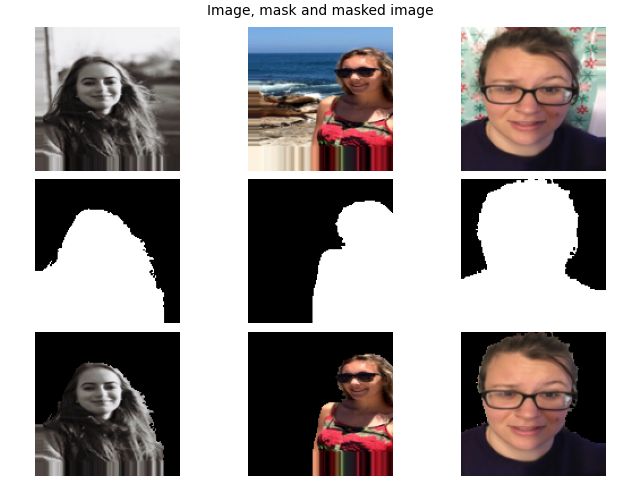
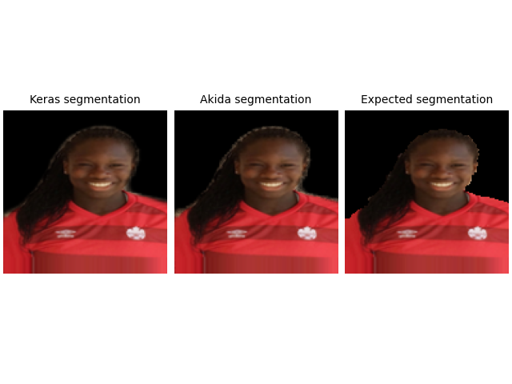

<!DOCTYPE html>
<html class="writer-html5" lang="en" >
<head>
  <meta charset="utf-8" /><meta name="generator" content="Docutils 0.17.1: http://docutils.sourceforge.net/" />

  <meta name="viewport" content="width=device-width, initial-scale=1.0" />
  <title>Segmentation tutorial &mdash; Akida Examples  documentation</title>
      <link rel="stylesheet" href="../../_static/pygments.css" type="text/css" />
      <link rel="stylesheet" href="../../_static/css/theme.css" type="text/css" />
      <link rel="stylesheet" href="../../_static/sg_gallery.css" type="text/css" />
      <link rel="stylesheet" href="../../_static/sg_gallery-binder.css" type="text/css" />
      <link rel="stylesheet" href="../../_static/sg_gallery-dataframe.css" type="text/css" />
      <link rel="stylesheet" href="../../_static/sg_gallery-rendered-html.css" type="text/css" />
      <link rel="stylesheet" href="../../_static/custom.css" type="text/css" />
    <link rel="shortcut icon" href="../../_static/favicon.ico"/>
  <!--[if lt IE 9]>
    <script src="../../_static/js/html5shiv.min.js"></script>
  <![endif]-->
  
        <script data-url_root="../../" id="documentation_options" src="../../_static/documentation_options.js"></script>
        <script src="../../_static/jquery.js"></script>
        <script src="../../_static/underscore.js"></script>
        <script src="../../_static/doctools.js"></script>
    <script src="../../_static/js/theme.js"></script>
    <link rel="index" title="Index" href="../../genindex.html" />
    <link rel="search" title="Search" href="../../search.html" />
    <link rel="next" title="Vision transformers" href="plot_7_vision_transformer.html" />
    <link rel="prev" title="YOLO/PASCAL-VOC detection tutorial" href="plot_5_voc_yolo_detection.html" /> 
</head>

<body class="wy-body-for-nav"> 
  <div class="wy-grid-for-nav">
    <nav data-toggle="wy-nav-shift" class="wy-nav-side">
      <div class="wy-side-scroll">
        <div class="wy-side-nav-search"  style="background: #989898" >

          
          
          <a href="../../index.html">
            
              
          </a>
              <div class="version">
                Akida, 2nd Generation
              </div>
<div role="search">
  <form id="rtd-search-form" class="wy-form" action="../../search.html" method="get">
    <input type="text" name="q" placeholder="Search docs" aria-label="Search docs" />
    <input type="hidden" name="check_keywords" value="yes" />
    <input type="hidden" name="area" value="default" />
  </form>
</div>
        </div><div class="wy-menu wy-menu-vertical" data-spy="affix" role="navigation" aria-label="Navigation menu">
              <ul class="current">
<li class="toctree-l1"><a class="reference internal" href="../../index.html">Overview</a></li>
<li class="toctree-l1"><a class="reference internal" href="../../installation.html">Installation</a><ul>
<li class="toctree-l2"><a class="reference internal" href="../../installation.html#supported-configurations">Supported configurations</a></li>
<li class="toctree-l2"><a class="reference internal" href="../../installation.html#quick-installation">Quick installation</a></li>
<li class="toctree-l2"><a class="reference internal" href="../../installation.html#running-examples">Running examples</a></li>
</ul>
</li>
<li class="toctree-l1"><a class="reference internal" href="../../user_guide/user_guide.html">User guide</a><ul>
<li class="toctree-l2"><a class="reference internal" href="../../user_guide/akida.html">Akida user guide</a><ul>
<li class="toctree-l3"><a class="reference internal" href="../../user_guide/akida.html#overview">Overview</a></li>
<li class="toctree-l3"><a class="reference internal" href="../../user_guide/akida.html#programming-interface">Programming interface</a><ul>
<li class="toctree-l4"><a class="reference internal" href="../../user_guide/akida.html#the-akida-model">The Akida Model</a></li>
<li class="toctree-l4"><a class="reference internal" href="../../user_guide/akida.html#akida-layers">Akida layers</a></li>
</ul>
</li>
<li class="toctree-l3"><a class="reference internal" href="../../user_guide/akida.html#model-hardware-mapping">Model Hardware Mapping</a><ul>
<li class="toctree-l4"><a class="reference internal" href="../../user_guide/akida.html#devices">Devices</a></li>
<li class="toctree-l4"><a class="reference internal" href="../../user_guide/akida.html#model-mapping">Model mapping</a></li>
<li class="toctree-l4"><a class="reference internal" href="../../user_guide/akida.html#advanced-mapping-details-and-hardware-devices-usage">Advanced Mapping Details and Hardware Devices Usage</a></li>
<li class="toctree-l4"><a class="reference internal" href="../../user_guide/akida.html#performance-measurement">Performance measurement</a></li>
</ul>
</li>
<li class="toctree-l3"><a class="reference internal" href="../../user_guide/akida.html#using-akida-edge-learning">Using Akida Edge learning</a><ul>
<li class="toctree-l4"><a class="reference internal" href="../../user_guide/akida.html#learning-constraints">Learning constraints</a></li>
<li class="toctree-l4"><a class="reference internal" href="../../user_guide/akida.html#compiling-a-layer">Compiling a layer</a></li>
</ul>
</li>
</ul>
</li>
<li class="toctree-l2"><a class="reference internal" href="../../user_guide/quantizeml.html">QuantizeML toolkit</a><ul>
<li class="toctree-l3"><a class="reference internal" href="../../user_guide/quantizeml.html#overview">Overview</a></li>
<li class="toctree-l3"><a class="reference internal" href="../../user_guide/quantizeml.html#the-fixedpoint-representation">The FixedPoint representation</a></li>
<li class="toctree-l3"><a class="reference internal" href="../../user_guide/quantizeml.html#quantization-flow">Quantization flow</a><ul>
<li class="toctree-l4"><a class="reference internal" href="../../user_guide/quantizeml.html#compatibility-constraints">Compatibility constraints</a></li>
<li class="toctree-l4"><a class="reference internal" href="../../user_guide/quantizeml.html#model-loading">Model loading</a></li>
</ul>
</li>
<li class="toctree-l3"><a class="reference internal" href="../../user_guide/quantizeml.html#command-line-interface">Command line interface</a><ul>
<li class="toctree-l4"><a class="reference internal" href="../../user_guide/quantizeml.html#quantize-cli">quantize CLI</a></li>
<li class="toctree-l4"><a class="reference internal" href="../../user_guide/quantizeml.html#config-cli">config CLI</a></li>
<li class="toctree-l4"><a class="reference internal" href="../../user_guide/quantizeml.html#check-cli">check CLI</a></li>
<li class="toctree-l4"><a class="reference internal" href="../../user_guide/quantizeml.html#insert-rescaling-cli">insert_rescaling CLI</a></li>
</ul>
</li>
<li class="toctree-l3"><a class="reference internal" href="../../user_guide/quantizeml.html#supported-layer-types">Supported layer types</a></li>
</ul>
</li>
<li class="toctree-l2"><a class="reference internal" href="../../user_guide/cnn2snn.html">CNN2SNN toolkit</a><ul>
<li class="toctree-l3"><a class="reference internal" href="../../user_guide/cnn2snn.html#overview">Overview</a></li>
<li class="toctree-l3"><a class="reference internal" href="../../user_guide/cnn2snn.html#conversion-flow">Conversion flow</a><ul>
<li class="toctree-l4"><a class="reference internal" href="../../user_guide/cnn2snn.html#conversion-compatibility">Conversion compatibility</a></li>
<li class="toctree-l4"><a class="reference internal" href="../../user_guide/cnn2snn.html#command-line-interface">Command-line interface</a></li>
</ul>
</li>
<li class="toctree-l3"><a class="reference internal" href="../../user_guide/cnn2snn.html#handling-akida-1-0-and-akida-2-0-specificities">Handling Akida 1.0 and Akida 2.0 specificities</a></li>
<li class="toctree-l3"><a class="reference internal" href="../../user_guide/cnn2snn.html#legacy-quantization-api">Legacy quantization API</a><ul>
<li class="toctree-l4"><a class="reference internal" href="../../user_guide/cnn2snn.html#typical-quantization-scenario">Typical quantization scenario</a></li>
<li class="toctree-l4"><a class="reference internal" href="../../user_guide/cnn2snn.html#design-compatibility-constraints">Design compatibility constraints</a></li>
<li class="toctree-l4"><a class="reference internal" href="../../user_guide/cnn2snn.html#id3">Command-line interface</a></li>
<li class="toctree-l4"><a class="reference internal" href="../../user_guide/cnn2snn.html#layers-considerations">Layers Considerations</a></li>
<li class="toctree-l4"><a class="reference internal" href="../../user_guide/cnn2snn.html#tips-and-tricks">Tips and Tricks</a></li>
</ul>
</li>
</ul>
</li>
<li class="toctree-l2"><a class="reference internal" href="../../user_guide/akida_models.html">Akida models zoo</a><ul>
<li class="toctree-l3"><a class="reference internal" href="../../user_guide/akida_models.html#overview">Overview</a></li>
<li class="toctree-l3"><a class="reference internal" href="../../user_guide/akida_models.html#command-line-interface-for-model-creation">Command-line interface for model creation</a></li>
<li class="toctree-l3"><a class="reference internal" href="../../user_guide/akida_models.html#command-line-interface-for-model-training">Command-line interface for model training</a><ul>
<li class="toctree-l4"><a class="reference internal" href="../../user_guide/akida_models.html#kws-training">KWS training</a></li>
<li class="toctree-l4"><a class="reference internal" href="../../user_guide/akida_models.html#akidanet-training">AkidaNet training</a></li>
</ul>
</li>
<li class="toctree-l3"><a class="reference internal" href="../../user_guide/akida_models.html#command-line-interface-for-model-evaluation">Command-line interface for model evaluation</a></li>
<li class="toctree-l3"><a class="reference internal" href="../../user_guide/akida_models.html#command-line-interface-to-evaluate-model-macs">Command-line interface to evaluate model MACS</a></li>
<li class="toctree-l3"><a class="reference internal" href="../../user_guide/akida_models.html#id1">Layer Blocks</a></li>
<li class="toctree-l3"><a class="reference internal" href="../../user_guide/akida_models.html#handling-akida-1-0-and-akida-2-0-specificities">Handling Akida 1.0 and Akida 2.0 specificities</a></li>
</ul>
</li>
<li class="toctree-l2"><a class="reference internal" href="../../user_guide/hw_constraints.html">Hardware constraints</a><ul>
<li class="toctree-l3"><a class="reference internal" href="../../user_guide/hw_constraints.html#inputconvolutional">InputConvolutional</a></li>
<li class="toctree-l3"><a class="reference internal" href="../../user_guide/hw_constraints.html#convolutional">Convolutional</a></li>
<li class="toctree-l3"><a class="reference internal" href="../../user_guide/hw_constraints.html#separableconvolutional">SeparableConvolutional</a></li>
<li class="toctree-l3"><a class="reference internal" href="../../user_guide/hw_constraints.html#fullyconnected">FullyConnected</a></li>
</ul>
</li>
</ul>
</li>
<li class="toctree-l1"><a class="reference internal" href="../../api_reference/api_reference.html">API reference</a><ul>
<li class="toctree-l2"><a class="reference internal" href="../../api_reference/akida_apis.html">Akida runtime</a><ul>
<li class="toctree-l3"><a class="reference internal" href="../../api_reference/akida_apis.html#model">Model</a></li>
<li class="toctree-l3"><a class="reference internal" href="../../api_reference/akida_apis.html#layer">Layer</a><ul>
<li class="toctree-l4"><a class="reference internal" href="../../api_reference/akida_apis.html#id1">Layer</a></li>
<li class="toctree-l4"><a class="reference internal" href="../../api_reference/akida_apis.html#mapping">Mapping</a></li>
</ul>
</li>
<li class="toctree-l3"><a class="reference internal" href="../../api_reference/akida_apis.html#akida-v1-layers">Akida V1 layers</a></li>
<li class="toctree-l3"><a class="reference internal" href="../../api_reference/akida_apis.html#akida-v2-layers">Akida V2 layers</a></li>
<li class="toctree-l3"><a class="reference internal" href="../../api_reference/akida_apis.html#layer-parameters">Layer parameters</a><ul>
<li class="toctree-l4"><a class="reference internal" href="../../api_reference/akida_apis.html#layertype">LayerType</a></li>
<li class="toctree-l4"><a class="reference internal" href="../../api_reference/akida_apis.html#padding">Padding</a></li>
<li class="toctree-l4"><a class="reference internal" href="../../api_reference/akida_apis.html#pooltype">PoolType</a></li>
</ul>
</li>
<li class="toctree-l3"><a class="reference internal" href="../../api_reference/akida_apis.html#optimizers">Optimizers</a></li>
<li class="toctree-l3"><a class="reference internal" href="../../api_reference/akida_apis.html#sequence">Sequence</a><ul>
<li class="toctree-l4"><a class="reference internal" href="../../api_reference/akida_apis.html#id2">Sequence</a></li>
<li class="toctree-l4"><a class="reference internal" href="../../api_reference/akida_apis.html#backendtype">BackendType</a></li>
<li class="toctree-l4"><a class="reference internal" href="../../api_reference/akida_apis.html#pass">Pass</a></li>
</ul>
</li>
<li class="toctree-l3"><a class="reference internal" href="../../api_reference/akida_apis.html#device">Device</a><ul>
<li class="toctree-l4"><a class="reference internal" href="../../api_reference/akida_apis.html#id3">Device</a></li>
<li class="toctree-l4"><a class="reference internal" href="../../api_reference/akida_apis.html#hwversion">HwVersion</a></li>
</ul>
</li>
<li class="toctree-l3"><a class="reference internal" href="../../api_reference/akida_apis.html#hwdevice">HWDevice</a><ul>
<li class="toctree-l4"><a class="reference internal" href="../../api_reference/akida_apis.html#id4">HWDevice</a></li>
<li class="toctree-l4"><a class="reference internal" href="../../api_reference/akida_apis.html#socdriver">SocDriver</a></li>
<li class="toctree-l4"><a class="reference internal" href="../../api_reference/akida_apis.html#clockmode">ClockMode</a></li>
</ul>
</li>
<li class="toctree-l3"><a class="reference internal" href="../../api_reference/akida_apis.html#powermeter">PowerMeter</a></li>
<li class="toctree-l3"><a class="reference internal" href="../../api_reference/akida_apis.html#np">NP</a></li>
<li class="toctree-l3"><a class="reference internal" href="../../api_reference/akida_apis.html#tools">Tools</a><ul>
<li class="toctree-l4"><a class="reference internal" href="../../api_reference/akida_apis.html#sparsity">Sparsity</a></li>
<li class="toctree-l4"><a class="reference internal" href="../../api_reference/akida_apis.html#compatibility">Compatibility</a></li>
</ul>
</li>
</ul>
</li>
<li class="toctree-l2"><a class="reference internal" href="../../api_reference/cnn2snn_apis.html">CNN2SNN</a><ul>
<li class="toctree-l3"><a class="reference internal" href="../../api_reference/cnn2snn_apis.html#akida-version">Akida version</a></li>
<li class="toctree-l3"><a class="reference internal" href="../../api_reference/cnn2snn_apis.html#conversion">Conversion</a></li>
<li class="toctree-l3"><a class="reference internal" href="../../api_reference/cnn2snn_apis.html#legacy-quantization-api">Legacy quantization API</a><ul>
<li class="toctree-l4"><a class="reference internal" href="../../api_reference/cnn2snn_apis.html#utils">Utils</a></li>
<li class="toctree-l4"><a class="reference internal" href="../../api_reference/cnn2snn_apis.html#calibration">Calibration</a></li>
<li class="toctree-l4"><a class="reference internal" href="../../api_reference/cnn2snn_apis.html#transforms">Transforms</a></li>
<li class="toctree-l4"><a class="reference internal" href="../../api_reference/cnn2snn_apis.html#constraint">Constraint</a></li>
<li class="toctree-l4"><a class="reference internal" href="../../api_reference/cnn2snn_apis.html#quantization">Quantization</a></li>
<li class="toctree-l4"><a class="reference internal" href="../../api_reference/cnn2snn_apis.html#quantizers">Quantizers</a></li>
<li class="toctree-l4"><a class="reference internal" href="../../api_reference/cnn2snn_apis.html#quantized-layers">Quantized layers</a></li>
</ul>
</li>
</ul>
</li>
<li class="toctree-l2"><a class="reference internal" href="../../api_reference/quantizeml_apis.html">QuantizeML</a><ul>
<li class="toctree-l3"><a class="reference internal" href="../../api_reference/quantizeml_apis.html#layers">Layers</a><ul>
<li class="toctree-l4"><a class="reference internal" href="../../api_reference/quantizeml_apis.html#reshaping">Reshaping</a></li>
<li class="toctree-l4"><a class="reference internal" href="../../api_reference/quantizeml_apis.html#activations">Activations</a></li>
<li class="toctree-l4"><a class="reference internal" href="../../api_reference/quantizeml_apis.html#attention">Attention</a></li>
<li class="toctree-l4"><a class="reference internal" href="../../api_reference/quantizeml_apis.html#normalization">Normalization</a></li>
<li class="toctree-l4"><a class="reference internal" href="../../api_reference/quantizeml_apis.html#convolution">Convolution</a></li>
<li class="toctree-l4"><a class="reference internal" href="../../api_reference/quantizeml_apis.html#depthwise-convolution">Depthwise convolution</a></li>
<li class="toctree-l4"><a class="reference internal" href="../../api_reference/quantizeml_apis.html#separable-convolution">Separable convolution</a></li>
<li class="toctree-l4"><a class="reference internal" href="../../api_reference/quantizeml_apis.html#dense">Dense</a></li>
<li class="toctree-l4"><a class="reference internal" href="../../api_reference/quantizeml_apis.html#skip-connection">Skip connection</a></li>
<li class="toctree-l4"><a class="reference internal" href="../../api_reference/quantizeml_apis.html#pooling">Pooling</a></li>
<li class="toctree-l4"><a class="reference internal" href="../../api_reference/quantizeml_apis.html#shiftmax">Shiftmax</a></li>
<li class="toctree-l4"><a class="reference internal" href="../../api_reference/quantizeml_apis.html#transformers">Transformers</a></li>
<li class="toctree-l4"><a class="reference internal" href="../../api_reference/quantizeml_apis.html#rescaling">Rescaling</a></li>
<li class="toctree-l4"><a class="reference internal" href="../../api_reference/quantizeml_apis.html#dropout">Dropout</a></li>
<li class="toctree-l4"><a class="reference internal" href="../../api_reference/quantizeml_apis.html#quantizers">Quantizers</a></li>
<li class="toctree-l4"><a class="reference internal" href="../../api_reference/quantizeml_apis.html#quantization-parameters">Quantization parameters</a></li>
<li class="toctree-l4"><a class="reference internal" href="../../api_reference/quantizeml_apis.html#calibration">Calibration</a></li>
<li class="toctree-l4"><a class="reference internal" href="../../api_reference/quantizeml_apis.html#recording">Recording</a></li>
</ul>
</li>
<li class="toctree-l3"><a class="reference internal" href="../../api_reference/quantizeml_apis.html#models">Models</a><ul>
<li class="toctree-l4"><a class="reference internal" href="../../api_reference/quantizeml_apis.html#transforms">Transforms</a></li>
<li class="toctree-l4"><a class="reference internal" href="../../api_reference/quantizeml_apis.html#quantization">Quantization</a></li>
<li class="toctree-l4"><a class="reference internal" href="../../api_reference/quantizeml_apis.html#id1">Calibration</a></li>
<li class="toctree-l4"><a class="reference internal" href="../../api_reference/quantizeml_apis.html#utils">Utils</a></li>
</ul>
</li>
<li class="toctree-l3"><a class="reference internal" href="../../api_reference/quantizeml_apis.html#tensors">Tensors</a><ul>
<li class="toctree-l4"><a class="reference internal" href="../../api_reference/quantizeml_apis.html#qtensor">QTensor</a></li>
<li class="toctree-l4"><a class="reference internal" href="../../api_reference/quantizeml_apis.html#fixedpoint">FixedPoint</a></li>
<li class="toctree-l4"><a class="reference internal" href="../../api_reference/quantizeml_apis.html#qfloat">QFloat</a></li>
</ul>
</li>
</ul>
</li>
<li class="toctree-l2"><a class="reference internal" href="../../api_reference/akida_models_apis.html">Akida models</a><ul>
<li class="toctree-l3"><a class="reference internal" href="../../api_reference/akida_models_apis.html#layer-blocks">Layer blocks</a><ul>
<li class="toctree-l4"><a class="reference internal" href="../../api_reference/akida_models_apis.html#cnn-blocks">CNN blocks</a></li>
<li class="toctree-l4"><a class="reference internal" href="../../api_reference/akida_models_apis.html#transformers-blocks">Transformers blocks</a></li>
<li class="toctree-l4"><a class="reference internal" href="../../api_reference/akida_models_apis.html#transposed-blocks">Transposed blocks</a></li>
<li class="toctree-l4"><a class="reference internal" href="../../api_reference/akida_models_apis.html#detection-block">Detection block</a></li>
</ul>
</li>
<li class="toctree-l3"><a class="reference internal" href="../../api_reference/akida_models_apis.html#helpers">Helpers</a><ul>
<li class="toctree-l4"><a class="reference internal" href="../../api_reference/akida_models_apis.html#gamma-constraint">Gamma constraint</a></li>
<li class="toctree-l4"><a class="reference internal" href="../../api_reference/akida_models_apis.html#unfusing-separableconvolutional">Unfusing SeparableConvolutional</a></li>
<li class="toctree-l4"><a class="reference internal" href="../../api_reference/akida_models_apis.html#extract-samples">Extract samples</a></li>
</ul>
</li>
<li class="toctree-l3"><a class="reference internal" href="../../api_reference/akida_models_apis.html#knowledge-distillation">Knowledge distillation</a></li>
<li class="toctree-l3"><a class="reference internal" href="../../api_reference/akida_models_apis.html#training">Training</a></li>
<li class="toctree-l3"><a class="reference internal" href="../../api_reference/akida_models_apis.html#macs">MACS</a></li>
<li class="toctree-l3"><a class="reference internal" href="../../api_reference/akida_models_apis.html#model-i-o">Model I/O</a></li>
<li class="toctree-l3"><a class="reference internal" href="../../api_reference/akida_models_apis.html#utils">Utils</a></li>
<li class="toctree-l3"><a class="reference internal" href="../../api_reference/akida_models_apis.html#model-zoo">Model zoo</a><ul>
<li class="toctree-l4"><a class="reference internal" href="../../api_reference/akida_models_apis.html#akidanet">AkidaNet</a></li>
<li class="toctree-l4"><a class="reference internal" href="../../api_reference/akida_models_apis.html#mobilenet">Mobilenet</a></li>
<li class="toctree-l4"><a class="reference internal" href="../../api_reference/akida_models_apis.html#ds-cnn">DS-CNN</a></li>
<li class="toctree-l4"><a class="reference internal" href="../../api_reference/akida_models_apis.html#vgg">VGG</a></li>
<li class="toctree-l4"><a class="reference internal" href="../../api_reference/akida_models_apis.html#yolo">YOLO</a></li>
<li class="toctree-l4"><a class="reference internal" href="../../api_reference/akida_models_apis.html#pointnet">PointNet++</a></li>
<li class="toctree-l4"><a class="reference internal" href="../../api_reference/akida_models_apis.html#gxnor">GXNOR</a></li>
<li class="toctree-l4"><a class="reference internal" href="../../api_reference/akida_models_apis.html#centernet">CenterNet</a></li>
<li class="toctree-l4"><a class="reference internal" href="../../api_reference/akida_models_apis.html#akidaunet">AkidaUNet</a></li>
<li class="toctree-l4"><a class="reference internal" href="../../api_reference/akida_models_apis.html#transformers">Transformers</a></li>
</ul>
</li>
</ul>
</li>
</ul>
</li>
<li class="toctree-l1 current"><a class="reference internal" href="../index.html">Examples</a><ul class="current">
<li class="toctree-l2 current"><a class="reference internal" href="../index.html#general-examples">General examples</a><ul class="current">
<li class="toctree-l3"><a class="reference internal" href="plot_0_global_workflow.html">Global Akida workflow tutorial</a><ul>
<li class="toctree-l4"><a class="reference internal" href="plot_0_global_workflow.html#create-and-train">1. Create and train</a></li>
<li class="toctree-l4"><a class="reference internal" href="plot_0_global_workflow.html#quantize">2. Quantize</a></li>
<li class="toctree-l4"><a class="reference internal" href="plot_0_global_workflow.html#convert">3. Convert</a></li>
<li class="toctree-l4"><a class="reference internal" href="plot_0_global_workflow.html#gxnor-mnist">4. GXNOR/MNIST</a></li>
</ul>
</li>
<li class="toctree-l3"><a class="reference internal" href="plot_1_akidanet_imagenet.html">AkidaNet/ImageNet inference</a><ul>
<li class="toctree-l4"><a class="reference internal" href="plot_1_akidanet_imagenet.html#dataset-preparation">1. Dataset preparation</a></li>
<li class="toctree-l4"><a class="reference internal" href="plot_1_akidanet_imagenet.html#create-a-keras-akidanet-model">2. Create a Keras AkidaNet model</a></li>
<li class="toctree-l4"><a class="reference internal" href="plot_1_akidanet_imagenet.html#quantized-model">3. Quantized model</a></li>
<li class="toctree-l4"><a class="reference internal" href="plot_1_akidanet_imagenet.html#pretrained-quantized-model">4. Pretrained quantized model</a></li>
<li class="toctree-l4"><a class="reference internal" href="plot_1_akidanet_imagenet.html#conversion-to-akida">5. Conversion to Akida</a></li>
<li class="toctree-l4"><a class="reference internal" href="plot_1_akidanet_imagenet.html#hardware-mapping-and-performance">6. Hardware mapping and performance</a></li>
</ul>
</li>
<li class="toctree-l3"><a class="reference internal" href="plot_2_ds_cnn_kws.html">DS-CNN/KWS inference</a><ul>
<li class="toctree-l4"><a class="reference internal" href="plot_2_ds_cnn_kws.html#load-the-preprocessed-dataset">1. Load the preprocessed dataset</a></li>
<li class="toctree-l4"><a class="reference internal" href="plot_2_ds_cnn_kws.html#load-a-pre-trained-native-keras-model">2. Load a pre-trained native Keras model</a></li>
<li class="toctree-l4"><a class="reference internal" href="plot_2_ds_cnn_kws.html#load-a-pre-trained-quantized-keras-model">3. Load a pre-trained quantized Keras model</a></li>
<li class="toctree-l4"><a class="reference internal" href="plot_2_ds_cnn_kws.html#conversion-to-akida">4. Conversion to Akida</a></li>
<li class="toctree-l4"><a class="reference internal" href="plot_2_ds_cnn_kws.html#confusion-matrix">5. Confusion matrix</a></li>
</ul>
</li>
<li class="toctree-l3"><a class="reference internal" href="plot_3_regression.html">Regression tutorial</a><ul>
<li class="toctree-l4"><a class="reference internal" href="plot_3_regression.html#load-the-dataset">1. Load the dataset</a></li>
<li class="toctree-l4"><a class="reference internal" href="plot_3_regression.html#load-a-pre-trained-native-keras-model">2. Load a pre-trained native Keras model</a></li>
<li class="toctree-l4"><a class="reference internal" href="plot_3_regression.html#load-a-pre-trained-quantized-keras-model">3. Load a pre-trained quantized Keras model</a></li>
<li class="toctree-l4"><a class="reference internal" href="plot_3_regression.html#conversion-to-akida">4. Conversion to Akida</a></li>
<li class="toctree-l4"><a class="reference internal" href="plot_3_regression.html#estimate-age-on-a-single-image">5. Estimate age on a single image</a></li>
</ul>
</li>
<li class="toctree-l3"><a class="reference internal" href="plot_4_transfer_learning.html">Transfer learning with AkidaNet for PlantVillage</a><ul>
<li class="toctree-l4"><a class="reference internal" href="plot_4_transfer_learning.html#transfer-learning-process">Transfer learning process</a></li>
<li class="toctree-l4"><a class="reference internal" href="plot_4_transfer_learning.html#dataset-preparation">1. Dataset preparation</a></li>
<li class="toctree-l4"><a class="reference internal" href="plot_4_transfer_learning.html#get-a-trained-akidanet-base-model">2. Get a trained AkidaNet base model</a></li>
<li class="toctree-l4"><a class="reference internal" href="plot_4_transfer_learning.html#add-a-classification-head-to-the-model">3. Add a classification head to the model</a></li>
<li class="toctree-l4"><a class="reference internal" href="plot_4_transfer_learning.html#freeze-the-base-model">4. Freeze the base model</a></li>
<li class="toctree-l4"><a class="reference internal" href="plot_4_transfer_learning.html#train-for-a-few-epochs">5. Train for a few epochs</a></li>
<li class="toctree-l4"><a class="reference internal" href="plot_4_transfer_learning.html#quantize-the-model">6. Quantize the model</a></li>
<li class="toctree-l4"><a class="reference internal" href="plot_4_transfer_learning.html#compute-accuracy">7. Compute accuracy</a></li>
</ul>
</li>
<li class="toctree-l3"><a class="reference internal" href="plot_5_voc_yolo_detection.html">YOLO/PASCAL-VOC detection tutorial</a><ul>
<li class="toctree-l4"><a class="reference internal" href="plot_5_voc_yolo_detection.html#introduction">1. Introduction</a></li>
<li class="toctree-l4"><a class="reference internal" href="plot_5_voc_yolo_detection.html#preprocessing-tools">2. Preprocessing tools</a></li>
<li class="toctree-l4"><a class="reference internal" href="plot_5_voc_yolo_detection.html#model-architecture">3. Model architecture</a></li>
<li class="toctree-l4"><a class="reference internal" href="plot_5_voc_yolo_detection.html#training">4. Training</a></li>
<li class="toctree-l4"><a class="reference internal" href="plot_5_voc_yolo_detection.html#performance">5. Performance</a></li>
<li class="toctree-l4"><a class="reference internal" href="plot_5_voc_yolo_detection.html#conversion-to-akida">6. Conversion to Akida</a></li>
</ul>
</li>
<li class="toctree-l3 current"><a class="current reference internal" href="#">Segmentation tutorial</a><ul>
<li class="toctree-l4"><a class="reference internal" href="#load-the-dataset">1. Load the dataset</a></li>
<li class="toctree-l4"><a class="reference internal" href="#load-a-pre-trained-native-keras-model">2. Load a pre-trained native Keras model</a></li>
<li class="toctree-l4"><a class="reference internal" href="#load-a-pre-trained-quantized-keras-model">3. Load a pre-trained quantized Keras model</a></li>
<li class="toctree-l4"><a class="reference internal" href="#conversion-to-akida">4. Conversion to Akida</a></li>
<li class="toctree-l4"><a class="reference internal" href="#segment-a-single-image">5. Segment a single image</a></li>
</ul>
</li>
<li class="toctree-l3"><a class="reference internal" href="plot_7_vision_transformer.html">Vision transformers</a><ul>
<li class="toctree-l4"><a class="reference internal" href="plot_7_vision_transformer.html#dataset-preparation">1. Dataset preparation</a></li>
<li class="toctree-l4"><a class="reference internal" href="plot_7_vision_transformer.html#create-a-transformer-model">2. Create a transformer model</a></li>
<li class="toctree-l4"><a class="reference internal" href="plot_7_vision_transformer.html#quantization">3. Quantization</a></li>
<li class="toctree-l4"><a class="reference internal" href="plot_7_vision_transformer.html#conversion-to-akida">4. Conversion to Akida</a></li>
<li class="toctree-l4"><a class="reference internal" href="plot_7_vision_transformer.html#attention-maps">5.3 Attention maps</a></li>
</ul>
</li>
</ul>
</li>
<li class="toctree-l2"><a class="reference internal" href="../index.html#edge-examples">Edge examples</a><ul>
<li class="toctree-l3"><a class="reference internal" href="../edge/plot_0_edge_learning_vision.html">Akida vision edge learning</a><ul>
<li class="toctree-l4"><a class="reference internal" href="../edge/plot_0_edge_learning_vision.html#dataset-preparation">1. Dataset preparation</a></li>
<li class="toctree-l4"><a class="reference internal" href="../edge/plot_0_edge_learning_vision.html#prepare-akida-model-for-learning">2. Prepare Akida model for learning</a></li>
<li class="toctree-l4"><a class="reference internal" href="../edge/plot_0_edge_learning_vision.html#edge-learning-with-akida">3. Edge learning with Akida</a></li>
</ul>
</li>
<li class="toctree-l3"><a class="reference internal" href="../edge/plot_1_edge_learning_kws.html">Akida edge learning for keyword spotting</a><ul>
<li class="toctree-l4"><a class="reference internal" href="../edge/plot_1_edge_learning_kws.html#edge-learning-process">1. Edge learning process</a></li>
<li class="toctree-l4"><a class="reference internal" href="../edge/plot_1_edge_learning_kws.html#dataset-preparation">2. Dataset preparation</a></li>
<li class="toctree-l4"><a class="reference internal" href="../edge/plot_1_edge_learning_kws.html#prepare-akida-model-for-learning">3. Prepare Akida model for learning</a></li>
<li class="toctree-l4"><a class="reference internal" href="../edge/plot_1_edge_learning_kws.html#learn-with-akida-using-the-training-set">4. Learn with Akida using the training set</a></li>
<li class="toctree-l4"><a class="reference internal" href="../edge/plot_1_edge_learning_kws.html#edge-learning">5. Edge learning</a></li>
</ul>
</li>
<li class="toctree-l3"><a class="reference internal" href="../edge/plot_2_edge_learning_parameters.html">Tips to set Akida learning parameters</a><ul>
<li class="toctree-l4"><a class="reference internal" href="../edge/plot_2_edge_learning_parameters.html#akida-learning-parameters">1. Akida learning parameters</a></li>
<li class="toctree-l4"><a class="reference internal" href="../edge/plot_2_edge_learning_parameters.html#create-akida-model">2. Create Akida model</a></li>
<li class="toctree-l4"><a class="reference internal" href="../edge/plot_2_edge_learning_parameters.html#estimate-the-required-number-of-weights-of-the-trainable-layer">3. Estimate the required number of weights of the trainable layer</a></li>
<li class="toctree-l4"><a class="reference internal" href="../edge/plot_2_edge_learning_parameters.html#estimate-the-number-of-neurons-per-class">4. Estimate the number of neurons per class</a></li>
</ul>
</li>
</ul>
</li>
<li class="toctree-l2"><a class="reference internal" href="../index.html#deprecated-cnn2snn-tutorials">[Deprecated] CNN2SNN tutorials</a><ul>
<li class="toctree-l3"><a class="reference internal" href="../cnn2snn/plot_1_advanced_cnn2snn.html">Advanced CNN2SNN tutorial</a><ul>
<li class="toctree-l4"><a class="reference internal" href="../cnn2snn/plot_1_advanced_cnn2snn.html#design-a-cnn2snn-quantized-model">1. Design a CNN2SNN quantized model</a></li>
<li class="toctree-l4"><a class="reference internal" href="../cnn2snn/plot_1_advanced_cnn2snn.html#weight-quantizer-details">2. Weight Quantizer Details</a></li>
<li class="toctree-l4"><a class="reference internal" href="../cnn2snn/plot_1_advanced_cnn2snn.html#understanding-quantized-activation">3. Understanding quantized activation</a></li>
<li class="toctree-l4"><a class="reference internal" href="../cnn2snn/plot_1_advanced_cnn2snn.html#how-to-deal-with-too-high-scale-factors">4. How to deal with too high scale factors</a></li>
</ul>
</li>
</ul>
</li>
</ul>
</li>
<li class="toctree-l1"><a class="reference internal" href="../../zoo_performances.html">Model zoo performances</a><ul>
<li class="toctree-l2"><a class="reference internal" href="../../zoo_performances.html#akida-1-0-models">Akida 1.0 models</a><ul>
<li class="toctree-l3"><a class="reference internal" href="../../zoo_performances.html#image-icon-ref-image-domain"> Image domain</a><ul>
<li class="toctree-l4"><a class="reference internal" href="../../zoo_performances.html#classification">Classification</a></li>
<li class="toctree-l4"><a class="reference internal" href="../../zoo_performances.html#object-detection">Object detection</a></li>
<li class="toctree-l4"><a class="reference internal" href="../../zoo_performances.html#regression">Regression</a></li>
<li class="toctree-l4"><a class="reference internal" href="../../zoo_performances.html#face-recognition">Face recognition</a></li>
</ul>
</li>
<li class="toctree-l3"><a class="reference internal" href="../../zoo_performances.html#audio-icon-ref-audio-domain"> Audio domain</a><ul>
<li class="toctree-l4"><a class="reference internal" href="../../zoo_performances.html#keyword-spotting">Keyword spotting</a></li>
</ul>
</li>
<li class="toctree-l3"><a class="reference internal" href="../../zoo_performances.html#pointcloud-icon-ref-point-cloud"> Point cloud</a><ul>
<li class="toctree-l4"><a class="reference internal" href="../../zoo_performances.html#id1">Classification</a></li>
</ul>
</li>
</ul>
</li>
<li class="toctree-l2"><a class="reference internal" href="../../zoo_performances.html#akida-2-0-models">Akida 2.0 models</a><ul>
<li class="toctree-l3"><a class="reference internal" href="../../zoo_performances.html#id2"> Image domain</a><ul>
<li class="toctree-l4"><a class="reference internal" href="../../zoo_performances.html#id3">Classification</a></li>
<li class="toctree-l4"><a class="reference internal" href="../../zoo_performances.html#id6">Object detection</a></li>
<li class="toctree-l4"><a class="reference internal" href="../../zoo_performances.html#id7">Regression</a></li>
<li class="toctree-l4"><a class="reference internal" href="../../zoo_performances.html#id8">Face recognition</a></li>
<li class="toctree-l4"><a class="reference internal" href="../../zoo_performances.html#segmentation">Segmentation</a></li>
</ul>
</li>
<li class="toctree-l3"><a class="reference internal" href="../../zoo_performances.html#id10"> Audio domain</a><ul>
<li class="toctree-l4"><a class="reference internal" href="../../zoo_performances.html#id11">Keyword spotting</a></li>
</ul>
</li>
<li class="toctree-l3"><a class="reference internal" href="../../zoo_performances.html#id12"> Point cloud</a><ul>
<li class="toctree-l4"><a class="reference internal" href="../../zoo_performances.html#id13">Classification</a></li>
</ul>
</li>
</ul>
</li>
</ul>
</li>
<li class="toctree-l1"><a class="reference external" href="https://github.com/Brainchip-Inc/akida_examples/releases">Changelog</a></li>
<li class="toctree-l1"><a class="reference external" href="https://support.brainchip.com/portal/home">Support</a></li>
<li class="toctree-l1"><a class="reference internal" href="../../license.html">License</a></li>
</ul>

        </div>
      </div>
    </nav>

    <section data-toggle="wy-nav-shift" class="wy-nav-content-wrap"><nav class="wy-nav-top" aria-label="Mobile navigation menu"  style="background: #989898" >
          <i data-toggle="wy-nav-top" class="fa fa-bars"></i>
          <a href="../../index.html">Akida Examples</a>
      </nav>

      <div class="wy-nav-content">
        <div class="rst-content">
          <div role="navigation" aria-label="Page navigation">
  <ul class="wy-breadcrumbs">
      <li><a href="../../index.html" class="icon icon-home" aria-label="Home"></a></li>
          <li class="breadcrumb-item"><a href="../index.html">Akida examples</a></li>
      <li class="breadcrumb-item active">Segmentation tutorial</li>
      <li class="wy-breadcrumbs-aside">
      </li>
  </ul>
  <hr/>
</div>
          <div role="main" class="document" itemscope="itemscope" itemtype="http://schema.org/Article">
           <div itemprop="articleBody">
             
  <div class="sphx-glr-download-link-note admonition note">
<p class="admonition-title">Note</p>
<p><a class="reference internal" href="#sphx-glr-download-examples-general-plot-6-segmentation-py"><span class="std std-ref">Go to the end</span></a>
to download the full example code</p>
</div>
<section class="sphx-glr-example-title" id="segmentation-tutorial">
<span id="sphx-glr-examples-general-plot-6-segmentation-py"></span><h1>Segmentation tutorial<a class="headerlink" href="#segmentation-tutorial" title="Permalink to this headline"></a></h1>
<p>This tutorial demonstrates that Akida-compatible models can perform segmentation tasks.</p>
<p>This is illustrated through a person segmentation problem using the <a class="reference external" href="https://github.com/anilsathyan7/Portrait-Segmentation">Portrait128 dataset</a>.</p>
<section id="load-the-dataset">
<h2>1. Load the dataset<a class="headerlink" href="#load-the-dataset" title="Permalink to this headline"></a></h2>
<div class="highlight-default notranslate"><div class="highlight"><pre><span></span><span class="kn">import</span> <span class="nn">os</span>
<span class="kn">import</span> <span class="nn">numpy</span> <span class="k">as</span> <span class="nn">np</span>
<span class="kn">from</span> <span class="nn">tensorflow.keras.utils</span> <span class="kn">import</span> <span class="n">get_file</span>

<span class="c1"># Download validation set from Brainchip data server, it contains 10% of the original dataset</span>
<span class="n">data_path</span> <span class="o">=</span> <span class="n">get_file</span><span class="p">(</span><span class="s2">&quot;val.tar.gz&quot;</span><span class="p">,</span>
                     <span class="s2">&quot;https://data.brainchip.com/dataset-mirror/portrait128/val.tar.gz&quot;</span><span class="p">,</span>
                     <span class="n">cache_subdir</span><span class="o">=</span><span class="n">os</span><span class="o">.</span><span class="n">path</span><span class="o">.</span><span class="n">join</span><span class="p">(</span><span class="s2">&quot;datasets&quot;</span><span class="p">,</span> <span class="s2">&quot;portrait128&quot;</span><span class="p">),</span>
                     <span class="n">extract</span><span class="o">=</span><span class="kc">True</span><span class="p">)</span>

<span class="n">data_dir</span> <span class="o">=</span> <span class="n">os</span><span class="o">.</span><span class="n">path</span><span class="o">.</span><span class="n">join</span><span class="p">(</span><span class="n">os</span><span class="o">.</span><span class="n">path</span><span class="o">.</span><span class="n">dirname</span><span class="p">(</span><span class="n">data_path</span><span class="p">),</span> <span class="s2">&quot;val&quot;</span><span class="p">)</span>
<span class="n">x_val</span> <span class="o">=</span> <span class="n">np</span><span class="o">.</span><span class="n">load</span><span class="p">(</span><span class="n">os</span><span class="o">.</span><span class="n">path</span><span class="o">.</span><span class="n">join</span><span class="p">(</span><span class="n">data_dir</span><span class="p">,</span> <span class="s2">&quot;val_img.npy&quot;</span><span class="p">))</span>
<span class="n">y_val</span> <span class="o">=</span> <span class="n">np</span><span class="o">.</span><span class="n">load</span><span class="p">(</span><span class="n">os</span><span class="o">.</span><span class="n">path</span><span class="o">.</span><span class="n">join</span><span class="p">(</span><span class="n">data_dir</span><span class="p">,</span> <span class="s2">&quot;val_msk.npy&quot;</span><span class="p">))</span><span class="o">.</span><span class="n">astype</span><span class="p">(</span><span class="s1">&#39;uint8&#39;</span><span class="p">)</span>
<span class="n">batch_size</span> <span class="o">=</span> <span class="mi">32</span>
<span class="n">steps</span> <span class="o">=</span> <span class="n">x_val</span><span class="o">.</span><span class="n">shape</span><span class="p">[</span><span class="mi">0</span><span class="p">]</span> <span class="o">//</span> <span class="mi">32</span>

<span class="c1"># Visualize some data</span>
<span class="kn">import</span> <span class="nn">matplotlib.pyplot</span> <span class="k">as</span> <span class="nn">plt</span>

<span class="nb">id</span> <span class="o">=</span> <span class="n">np</span><span class="o">.</span><span class="n">random</span><span class="o">.</span><span class="n">randint</span><span class="p">(</span><span class="mi">0</span><span class="p">,</span> <span class="n">x_val</span><span class="o">.</span><span class="n">shape</span><span class="p">[</span><span class="mi">0</span><span class="p">])</span>

<span class="n">fig</span><span class="p">,</span> <span class="n">axs</span> <span class="o">=</span> <span class="n">plt</span><span class="o">.</span><span class="n">subplots</span><span class="p">(</span><span class="mi">3</span><span class="p">,</span> <span class="mi">3</span><span class="p">,</span> <span class="n">constrained_layout</span><span class="o">=</span><span class="kc">True</span><span class="p">)</span>
<span class="k">for</span> <span class="n">col</span> <span class="ow">in</span> <span class="nb">range</span><span class="p">(</span><span class="mi">3</span><span class="p">):</span>
    <span class="n">axs</span><span class="p">[</span><span class="mi">0</span><span class="p">,</span> <span class="n">col</span><span class="p">]</span><span class="o">.</span><span class="n">imshow</span><span class="p">(</span><span class="n">x_val</span><span class="p">[</span><span class="nb">id</span> <span class="o">+</span> <span class="n">col</span><span class="p">]</span> <span class="o">/</span> <span class="mf">255.</span><span class="p">)</span>
    <span class="n">axs</span><span class="p">[</span><span class="mi">0</span><span class="p">,</span> <span class="n">col</span><span class="p">]</span><span class="o">.</span><span class="n">axis</span><span class="p">(</span><span class="s1">&#39;off&#39;</span><span class="p">)</span>
    <span class="n">axs</span><span class="p">[</span><span class="mi">1</span><span class="p">,</span> <span class="n">col</span><span class="p">]</span><span class="o">.</span><span class="n">imshow</span><span class="p">(</span><span class="mi">1</span> <span class="o">-</span> <span class="n">y_val</span><span class="p">[</span><span class="nb">id</span> <span class="o">+</span> <span class="n">col</span><span class="p">],</span> <span class="n">cmap</span><span class="o">=</span><span class="s1">&#39;Greys&#39;</span><span class="p">)</span>
    <span class="n">axs</span><span class="p">[</span><span class="mi">1</span><span class="p">,</span> <span class="n">col</span><span class="p">]</span><span class="o">.</span><span class="n">axis</span><span class="p">(</span><span class="s1">&#39;off&#39;</span><span class="p">)</span>
    <span class="n">axs</span><span class="p">[</span><span class="mi">2</span><span class="p">,</span> <span class="n">col</span><span class="p">]</span><span class="o">.</span><span class="n">imshow</span><span class="p">(</span><span class="n">x_val</span><span class="p">[</span><span class="nb">id</span> <span class="o">+</span> <span class="n">col</span><span class="p">]</span> <span class="o">/</span> <span class="mf">255.</span> <span class="o">*</span> <span class="n">y_val</span><span class="p">[</span><span class="nb">id</span> <span class="o">+</span> <span class="n">col</span><span class="p">])</span>
    <span class="n">axs</span><span class="p">[</span><span class="mi">2</span><span class="p">,</span> <span class="n">col</span><span class="p">]</span><span class="o">.</span><span class="n">axis</span><span class="p">(</span><span class="s1">&#39;off&#39;</span><span class="p">)</span>

<span class="n">fig</span><span class="o">.</span><span class="n">suptitle</span><span class="p">(</span><span class="s1">&#39;Image, mask and masked image&#39;</span><span class="p">,</span> <span class="n">fontsize</span><span class="o">=</span><span class="mi">10</span><span class="p">)</span>
<span class="n">plt</span><span class="o">.</span><span class="n">show</span><span class="p">()</span>
</pre></div>
</div>
<div class="sphx-glr-script-out highlight-none notranslate"><div class="highlight"><pre><span></span>Downloading data from https://data.brainchip.com/dataset-mirror/portrait128/val.tar.gz

     8192/267313385 [..............................] - ETA: 0s
   212992/267313385 [..............................] - ETA: 1:11
   663552/267313385 [..............................] - ETA: 43s 
  1015808/267313385 [..............................] - ETA: 41s
  1400832/267313385 [..............................] - ETA: 39s
  1761280/267313385 [..............................] - ETA: 39s
  2105344/267313385 [..............................] - ETA: 39s
  2506752/267313385 [..............................] - ETA: 38s
  2867200/267313385 [..............................] - ETA: 38s
  3260416/267313385 [..............................] - ETA: 37s
  3661824/267313385 [..............................] - ETA: 37s
  4038656/267313385 [..............................] - ETA: 36s
  4440064/267313385 [..............................] - ETA: 36s
  4866048/267313385 [..............................] - ETA: 35s
  5242880/267313385 [..............................] - ETA: 35s
  5685248/267313385 [..............................] - ETA: 35s
  6078464/267313385 [..............................] - ETA: 35s
  6520832/267313385 [..............................] - ETA: 34s
  6963200/267313385 [..............................] - ETA: 34s
  7380992/267313385 [..............................] - ETA: 34s
  7831552/267313385 [..............................] - ETA: 33s
  8257536/267313385 [..............................] - ETA: 33s
  8716288/267313385 [..............................] - ETA: 33s
  9175040/267313385 [&gt;.............................] - ETA: 33s
  9633792/267313385 [&gt;.............................] - ETA: 32s
 10125312/267313385 [&gt;.............................] - ETA: 32s
 10584064/267313385 [&gt;.............................] - ETA: 32s
 11059200/267313385 [&gt;.............................] - ETA: 31s
 11534336/267313385 [&gt;.............................] - ETA: 31s
 12025856/267313385 [&gt;.............................] - ETA: 31s
 12517376/267313385 [&gt;.............................] - ETA: 31s
 12992512/267313385 [&gt;.............................] - ETA: 30s
 13500416/267313385 [&gt;.............................] - ETA: 30s
 13991936/267313385 [&gt;.............................] - ETA: 30s
 14516224/267313385 [&gt;.............................] - ETA: 30s
 15007744/267313385 [&gt;.............................] - ETA: 30s
 15532032/267313385 [&gt;.............................] - ETA: 29s
 16056320/267313385 [&gt;.............................] - ETA: 29s
 16596992/267313385 [&gt;.............................] - ETA: 29s
 17121280/267313385 [&gt;.............................] - ETA: 29s
 17678336/267313385 [&gt;.............................] - ETA: 28s
 18219008/267313385 [=&gt;............................] - ETA: 28s
 18759680/267313385 [=&gt;............................] - ETA: 28s
 19300352/267313385 [=&gt;............................] - ETA: 28s
 19841024/267313385 [=&gt;............................] - ETA: 27s
 20381696/267313385 [=&gt;............................] - ETA: 27s
 20938752/267313385 [=&gt;............................] - ETA: 27s
 21495808/267313385 [=&gt;............................] - ETA: 27s
 22069248/267313385 [=&gt;............................] - ETA: 27s
 22642688/267313385 [=&gt;............................] - ETA: 26s
 23232512/267313385 [=&gt;............................] - ETA: 26s
 23805952/267313385 [=&gt;............................] - ETA: 26s
 24395776/267313385 [=&gt;............................] - ETA: 26s
 24985600/267313385 [=&gt;............................] - ETA: 26s
 25575424/267313385 [=&gt;............................] - ETA: 25s
 26165248/267313385 [=&gt;............................] - ETA: 25s
 26755072/267313385 [==&gt;...........................] - ETA: 25s
 27344896/267313385 [==&gt;...........................] - ETA: 25s
 27934720/267313385 [==&gt;...........................] - ETA: 25s
 28524544/267313385 [==&gt;...........................] - ETA: 25s
 29114368/267313385 [==&gt;...........................] - ETA: 24s
 29704192/267313385 [==&gt;...........................] - ETA: 24s
 30294016/267313385 [==&gt;...........................] - ETA: 24s
 30900224/267313385 [==&gt;...........................] - ETA: 24s
 31490048/267313385 [==&gt;...........................] - ETA: 24s
 32063488/267313385 [==&gt;...........................] - ETA: 24s
 32669696/267313385 [==&gt;...........................] - ETA: 24s
 33259520/267313385 [==&gt;...........................] - ETA: 23s
 33849344/267313385 [==&gt;...........................] - ETA: 23s
 34439168/267313385 [==&gt;...........................] - ETA: 23s
 35028992/267313385 [==&gt;...........................] - ETA: 23s
 35618816/267313385 [==&gt;...........................] - ETA: 23s
 36208640/267313385 [===&gt;..........................] - ETA: 23s
 36798464/267313385 [===&gt;..........................] - ETA: 23s
 37388288/267313385 [===&gt;..........................] - ETA: 23s
 37978112/267313385 [===&gt;..........................] - ETA: 22s
 38567936/267313385 [===&gt;..........................] - ETA: 22s
 39174144/267313385 [===&gt;..........................] - ETA: 22s
 39763968/267313385 [===&gt;..........................] - ETA: 22s
 40353792/267313385 [===&gt;..........................] - ETA: 22s
 40960000/267313385 [===&gt;..........................] - ETA: 22s
 41549824/267313385 [===&gt;..........................] - ETA: 22s
 42156032/267313385 [===&gt;..........................] - ETA: 22s
 42745856/267313385 [===&gt;..........................] - ETA: 22s
 43335680/267313385 [===&gt;..........................] - ETA: 22s
 43810816/267313385 [===&gt;..........................] - ETA: 22s
 44253184/267313385 [===&gt;..........................] - ETA: 21s
 44613632/267313385 [====&gt;.........................] - ETA: 22s
 44990464/267313385 [====&gt;.........................] - ETA: 22s
 45367296/267313385 [====&gt;.........................] - ETA: 22s
 45744128/267313385 [====&gt;.........................] - ETA: 22s
 46137344/267313385 [====&gt;.........................] - ETA: 22s
 46530560/267313385 [====&gt;.........................] - ETA: 22s
 46923776/267313385 [====&gt;.........................] - ETA: 22s
 47300608/267313385 [====&gt;.........................] - ETA: 22s
 47710208/267313385 [====&gt;.........................] - ETA: 22s
 48119808/267313385 [====&gt;.........................] - ETA: 22s
 48529408/267313385 [====&gt;.........................] - ETA: 22s
 48955392/267313385 [====&gt;.........................] - ETA: 22s
 49381376/267313385 [====&gt;.........................] - ETA: 22s
 49807360/267313385 [====&gt;.........................] - ETA: 22s
 50233344/267313385 [====&gt;.........................] - ETA: 22s
 50675712/267313385 [====&gt;.........................] - ETA: 22s
 51118080/267313385 [====&gt;.........................] - ETA: 22s
 51576832/267313385 [====&gt;.........................] - ETA: 22s
 52027392/267313385 [====&gt;.........................] - ETA: 22s
 52494336/267313385 [====&gt;.........................] - ETA: 22s
 52969472/267313385 [====&gt;.........................] - ETA: 21s
 53444608/267313385 [====&gt;.........................] - ETA: 21s
 53919744/267313385 [=====&gt;........................] - ETA: 21s
 54394880/267313385 [=====&gt;........................] - ETA: 21s
 54886400/267313385 [=====&gt;........................] - ETA: 21s
 55377920/267313385 [=====&gt;........................] - ETA: 21s
 55885824/267313385 [=====&gt;........................] - ETA: 21s
 56377344/267313385 [=====&gt;........................] - ETA: 21s
 56885248/267313385 [=====&gt;........................] - ETA: 21s
 57409536/267313385 [=====&gt;........................] - ETA: 21s
 57917440/267313385 [=====&gt;........................] - ETA: 21s
 58441728/267313385 [=====&gt;........................] - ETA: 21s
 58966016/267313385 [=====&gt;........................] - ETA: 21s
 59490304/267313385 [=====&gt;........................] - ETA: 21s
 60014592/267313385 [=====&gt;........................] - ETA: 21s
 60571648/267313385 [=====&gt;........................] - ETA: 21s
 61112320/267313385 [=====&gt;........................] - ETA: 21s
 61669376/267313385 [=====&gt;........................] - ETA: 20s
 62210048/267313385 [=====&gt;........................] - ETA: 20s
 62767104/267313385 [======&gt;.......................] - ETA: 20s
 63324160/267313385 [======&gt;.......................] - ETA: 20s
 63897600/267313385 [======&gt;.......................] - ETA: 20s
 64471040/267313385 [======&gt;.......................] - ETA: 20s
 65044480/267313385 [======&gt;.......................] - ETA: 20s
 65634304/267313385 [======&gt;.......................] - ETA: 20s
 66224128/267313385 [======&gt;.......................] - ETA: 20s
 66813952/267313385 [======&gt;.......................] - ETA: 20s
 67403776/267313385 [======&gt;.......................] - ETA: 20s
 67993600/267313385 [======&gt;.......................] - ETA: 20s
 68599808/267313385 [======&gt;.......................] - ETA: 20s
 69189632/267313385 [======&gt;.......................] - ETA: 19s
 69779456/267313385 [======&gt;.......................] - ETA: 19s
 70369280/267313385 [======&gt;.......................] - ETA: 19s
 70959104/267313385 [======&gt;.......................] - ETA: 19s
 71557120/267313385 [=======&gt;......................] - ETA: 19s
 72138752/267313385 [=======&gt;......................] - ETA: 19s
 72728576/267313385 [=======&gt;......................] - ETA: 19s
 73334784/267313385 [=======&gt;......................] - ETA: 19s
 73924608/267313385 [=======&gt;......................] - ETA: 19s
 74530816/267313385 [=======&gt;......................] - ETA: 19s
 75120640/267313385 [=======&gt;......................] - ETA: 19s
 75710464/267313385 [=======&gt;......................] - ETA: 19s
 76300288/267313385 [=======&gt;......................] - ETA: 18s
 76890112/267313385 [=======&gt;......................] - ETA: 18s
 77479936/267313385 [=======&gt;......................] - ETA: 18s
 78069760/267313385 [=======&gt;......................] - ETA: 18s
 78659584/267313385 [=======&gt;......................] - ETA: 18s
 79249408/267313385 [=======&gt;......................] - ETA: 18s
 79839232/267313385 [=======&gt;......................] - ETA: 18s
 80445440/267313385 [========&gt;.....................] - ETA: 18s
 81035264/267313385 [========&gt;.....................] - ETA: 18s
 81625088/267313385 [========&gt;.....................] - ETA: 18s
 82214912/267313385 [========&gt;.....................] - ETA: 18s
 82804736/267313385 [========&gt;.....................] - ETA: 18s
 83394560/267313385 [========&gt;.....................] - ETA: 18s
 83984384/267313385 [========&gt;.....................] - ETA: 17s
 84361216/267313385 [========&gt;.....................] - ETA: 17s
 85016576/267313385 [========&gt;.....................] - ETA: 17s
 85524480/267313385 [========&gt;.....................] - ETA: 17s
 86040576/267313385 [========&gt;.....................] - ETA: 17s
 86556672/267313385 [========&gt;.....................] - ETA: 17s
 87080960/267313385 [========&gt;.....................] - ETA: 17s
 87621632/267313385 [========&gt;.....................] - ETA: 17s
 88162304/267313385 [========&gt;.....................] - ETA: 17s
 88702976/267313385 [========&gt;.....................] - ETA: 17s
 89243648/267313385 [=========&gt;....................] - ETA: 17s
 89800704/267313385 [=========&gt;....................] - ETA: 17s
 90357760/267313385 [=========&gt;....................] - ETA: 17s
 90931200/267313385 [=========&gt;....................] - ETA: 17s
 91504640/267313385 [=========&gt;....................] - ETA: 17s
 92078080/267313385 [=========&gt;....................] - ETA: 17s
 92667904/267313385 [=========&gt;....................] - ETA: 17s
 93257728/267313385 [=========&gt;....................] - ETA: 16s
 93831168/267313385 [=========&gt;....................] - ETA: 16s
 94420992/267313385 [=========&gt;....................] - ETA: 16s
 95027200/267313385 [=========&gt;....................] - ETA: 16s
 95436800/267313385 [=========&gt;....................] - ETA: 16s
 96059392/267313385 [=========&gt;....................] - ETA: 16s
 96501760/267313385 [=========&gt;....................] - ETA: 16s
 96944128/267313385 [=========&gt;....................] - ETA: 16s
 97370112/267313385 [=========&gt;....................] - ETA: 16s
 97845248/267313385 [=========&gt;....................] - ETA: 16s
 98304000/267313385 [==========&gt;...................] - ETA: 16s
 98762752/267313385 [==========&gt;...................] - ETA: 16s
 99237888/267313385 [==========&gt;...................] - ETA: 16s
 99696640/267313385 [==========&gt;...................] - ETA: 16s
100188160/267313385 [==========&gt;...................] - ETA: 16s
100663296/267313385 [==========&gt;...................] - ETA: 16s
101154816/267313385 [==========&gt;...................] - ETA: 16s
101646336/267313385 [==========&gt;...................] - ETA: 16s
102137856/267313385 [==========&gt;...................] - ETA: 16s
102629376/267313385 [==========&gt;...................] - ETA: 16s
103153664/267313385 [==========&gt;...................] - ETA: 16s
103661568/267313385 [==========&gt;...................] - ETA: 16s
104169472/267313385 [==========&gt;...................] - ETA: 16s
104693760/267313385 [==========&gt;...................] - ETA: 15s
105201664/267313385 [==========&gt;...................] - ETA: 15s
105742336/267313385 [==========&gt;...................] - ETA: 15s
106266624/267313385 [==========&gt;...................] - ETA: 15s
106807296/267313385 [==========&gt;...................] - ETA: 15s
107347968/267313385 [===========&gt;..................] - ETA: 15s
107888640/267313385 [===========&gt;..................] - ETA: 15s
108429312/267313385 [===========&gt;..................] - ETA: 15s
108969984/267313385 [===========&gt;..................] - ETA: 15s
109510656/267313385 [===========&gt;..................] - ETA: 15s
110067712/267313385 [===========&gt;..................] - ETA: 15s
110608384/267313385 [===========&gt;..................] - ETA: 15s
111181824/267313385 [===========&gt;..................] - ETA: 15s
111755264/267313385 [===========&gt;..................] - ETA: 15s
112312320/267313385 [===========&gt;..................] - ETA: 15s
112885760/267313385 [===========&gt;..................] - ETA: 15s
113475584/267313385 [===========&gt;..................] - ETA: 15s
114065408/267313385 [===========&gt;..................] - ETA: 14s
114655232/267313385 [===========&gt;..................] - ETA: 14s
115245056/267313385 [===========&gt;..................] - ETA: 14s
115834880/267313385 [===========&gt;..................] - ETA: 14s
116424704/267313385 [============&gt;.................] - ETA: 14s
117014528/267313385 [============&gt;.................] - ETA: 14s
117604352/267313385 [============&gt;.................] - ETA: 14s
118194176/267313385 [============&gt;.................] - ETA: 14s
118784000/267313385 [============&gt;.................] - ETA: 14s
119373824/267313385 [============&gt;.................] - ETA: 14s
119963648/267313385 [============&gt;.................] - ETA: 14s
120553472/267313385 [============&gt;.................] - ETA: 14s
121143296/267313385 [============&gt;.................] - ETA: 14s
121733120/267313385 [============&gt;.................] - ETA: 14s
122322944/267313385 [============&gt;.................] - ETA: 14s
122912768/267313385 [============&gt;.................] - ETA: 13s
123502592/267313385 [============&gt;.................] - ETA: 13s
124092416/267313385 [============&gt;.................] - ETA: 13s
124682240/267313385 [============&gt;.................] - ETA: 13s
125272064/267313385 [=============&gt;................] - ETA: 13s
125861888/267313385 [=============&gt;................] - ETA: 13s
126451712/267313385 [=============&gt;................] - ETA: 13s
127041536/267313385 [=============&gt;................] - ETA: 13s
127631360/267313385 [=============&gt;................] - ETA: 13s
128221184/267313385 [=============&gt;................] - ETA: 13s
128811008/267313385 [=============&gt;................] - ETA: 13s
129400832/267313385 [=============&gt;................] - ETA: 13s
130007040/267313385 [=============&gt;................] - ETA: 13s
130596864/267313385 [=============&gt;................] - ETA: 13s
131186688/267313385 [=============&gt;................] - ETA: 13s
131776512/267313385 [=============&gt;................] - ETA: 13s
132366336/267313385 [=============&gt;................] - ETA: 12s
132644864/267313385 [=============&gt;................] - ETA: 12s
133283840/267313385 [=============&gt;................] - ETA: 12s
134053888/267313385 [==============&gt;...............] - ETA: 12s
134414336/267313385 [==============&gt;...............] - ETA: 12s
134807552/267313385 [==============&gt;...............] - ETA: 12s
135184384/267313385 [==============&gt;...............] - ETA: 12s
135577600/267313385 [==============&gt;...............] - ETA: 12s
136003584/267313385 [==============&gt;...............] - ETA: 12s
136380416/267313385 [==============&gt;...............] - ETA: 12s
136806400/267313385 [==============&gt;...............] - ETA: 12s
137199616/267313385 [==============&gt;...............] - ETA: 12s
137609216/267313385 [==============&gt;...............] - ETA: 12s
138067968/267313385 [==============&gt;...............] - ETA: 12s
138469376/267313385 [==============&gt;...............] - ETA: 12s
138903552/267313385 [==============&gt;...............] - ETA: 12s
139345920/267313385 [==============&gt;...............] - ETA: 12s
139788288/267313385 [==============&gt;...............] - ETA: 12s
140247040/267313385 [==============&gt;...............] - ETA: 12s
140689408/267313385 [==============&gt;...............] - ETA: 12s
141148160/267313385 [==============&gt;...............] - ETA: 12s
141623296/267313385 [==============&gt;...............] - ETA: 12s
142082048/267313385 [==============&gt;...............] - ETA: 12s
142573568/267313385 [===============&gt;..............] - ETA: 12s
143065088/267313385 [===============&gt;..............] - ETA: 12s
143540224/267313385 [===============&gt;..............] - ETA: 12s
143998976/267313385 [===============&gt;..............] - ETA: 12s
144506880/267313385 [===============&gt;..............] - ETA: 12s
144965632/267313385 [===============&gt;..............] - ETA: 11s
145440768/267313385 [===============&gt;..............] - ETA: 11s
145932288/267313385 [===============&gt;..............] - ETA: 11s
146309120/267313385 [===============&gt;..............] - ETA: 11s
146391040/267313385 [===============&gt;..............] - ETA: 11s
146980864/267313385 [===============&gt;..............] - ETA: 11s
147062784/267313385 [===============&gt;..............] - ETA: 11s
147652608/267313385 [===============&gt;..............] - ETA: 11s
147963904/267313385 [===============&gt;..............] - ETA: 11s
148275200/267313385 [===============&gt;..............] - ETA: 11s
148586496/267313385 [===============&gt;..............] - ETA: 11s
148914176/267313385 [===============&gt;..............] - ETA: 11s
149241856/267313385 [===============&gt;..............] - ETA: 11s
149569536/267313385 [===============&gt;..............] - ETA: 11s
149848064/267313385 [===============&gt;..............] - ETA: 11s
150175744/267313385 [===============&gt;..............] - ETA: 11s
150503424/267313385 [===============&gt;..............] - ETA: 11s
150814720/267313385 [===============&gt;..............] - ETA: 11s
151158784/267313385 [===============&gt;..............] - ETA: 11s
151502848/267313385 [================&gt;.............] - ETA: 11s
151846912/267313385 [================&gt;.............] - ETA: 11s
152190976/267313385 [================&gt;.............] - ETA: 11s
152551424/267313385 [================&gt;.............] - ETA: 11s
152911872/267313385 [================&gt;.............] - ETA: 11s
153255936/267313385 [================&gt;.............] - ETA: 11s
153649152/267313385 [================&gt;.............] - ETA: 11s
154025984/267313385 [================&gt;.............] - ETA: 11s
154386432/267313385 [================&gt;.............] - ETA: 11s
154796032/267313385 [================&gt;.............] - ETA: 11s
155189248/267313385 [================&gt;.............] - ETA: 11s
155549696/267313385 [================&gt;.............] - ETA: 11s
155959296/267313385 [================&gt;.............] - ETA: 11s
156368896/267313385 [================&gt;.............] - ETA: 11s
156762112/267313385 [================&gt;.............] - ETA: 11s
157188096/267313385 [================&gt;.............] - ETA: 11s
157630464/267313385 [================&gt;.............] - ETA: 11s
158040064/267313385 [================&gt;.............] - ETA: 11s
158449664/267313385 [================&gt;.............] - ETA: 11s
158892032/267313385 [================&gt;.............] - ETA: 11s
159301632/267313385 [================&gt;.............] - ETA: 11s
159760384/267313385 [================&gt;.............] - ETA: 10s
160219136/267313385 [================&gt;.............] - ETA: 10s
160661504/267313385 [=================&gt;............] - ETA: 10s
161120256/267313385 [=================&gt;............] - ETA: 10s
161579008/267313385 [=================&gt;............] - ETA: 10s
162037760/267313385 [=================&gt;............] - ETA: 10s
162512896/267313385 [=================&gt;............] - ETA: 10s
162971648/267313385 [=================&gt;............] - ETA: 10s
163454976/267313385 [=================&gt;............] - ETA: 10s
163938304/267313385 [=================&gt;............] - ETA: 10s
164405248/267313385 [=================&gt;............] - ETA: 10s
164724736/267313385 [=================&gt;............] - ETA: 10s
165429248/267313385 [=================&gt;............] - ETA: 10s
165789696/267313385 [=================&gt;............] - ETA: 10s
166166528/267313385 [=================&gt;............] - ETA: 10s
166526976/267313385 [=================&gt;............] - ETA: 10s
166903808/267313385 [=================&gt;............] - ETA: 10s
167280640/267313385 [=================&gt;............] - ETA: 10s
167624704/267313385 [=================&gt;............] - ETA: 10s
168050688/267313385 [=================&gt;............] - ETA: 10s
168460288/267313385 [=================&gt;............] - ETA: 10s
168828928/267313385 [=================&gt;............] - ETA: 10s
169230336/267313385 [=================&gt;............] - ETA: 10s
169623552/267313385 [==================&gt;...........] - ETA: 10s
170033152/267313385 [==================&gt;...........] - ETA: 10s
170459136/267313385 [==================&gt;...........] - ETA: 10s
170885120/267313385 [==================&gt;...........] - ETA: 9s 
171311104/267313385 [==================&gt;...........] - ETA: 9s
171737088/267313385 [==================&gt;...........] - ETA: 9s
172146688/267313385 [==================&gt;...........] - ETA: 9s
172605440/267313385 [==================&gt;...........] - ETA: 9s
173031424/267313385 [==================&gt;...........] - ETA: 9s
173490176/267313385 [==================&gt;...........] - ETA: 9s
173948928/267313385 [==================&gt;...........] - ETA: 9s
174407680/267313385 [==================&gt;...........] - ETA: 9s
174882816/267313385 [==================&gt;...........] - ETA: 9s
175341568/267313385 [==================&gt;...........] - ETA: 9s
175816704/267313385 [==================&gt;...........] - ETA: 9s
176308224/267313385 [==================&gt;...........] - ETA: 9s
176783360/267313385 [==================&gt;...........] - ETA: 9s
177274880/267313385 [==================&gt;...........] - ETA: 9s
177766400/267313385 [==================&gt;...........] - ETA: 9s
178257920/267313385 [===================&gt;..........] - ETA: 9s
178765824/267313385 [===================&gt;..........] - ETA: 9s
179273728/267313385 [===================&gt;..........] - ETA: 9s
179798016/267313385 [===================&gt;..........] - ETA: 9s
180305920/267313385 [===================&gt;..........] - ETA: 9s
180830208/267313385 [===================&gt;..........] - ETA: 8s
181354496/267313385 [===================&gt;..........] - ETA: 8s
181895168/267313385 [===================&gt;..........] - ETA: 8s
182419456/267313385 [===================&gt;..........] - ETA: 8s
182976512/267313385 [===================&gt;..........] - ETA: 8s
183517184/267313385 [===================&gt;..........] - ETA: 8s
184057856/267313385 [===================&gt;..........] - ETA: 8s
184614912/267313385 [===================&gt;..........] - ETA: 8s
185171968/267313385 [===================&gt;..........] - ETA: 8s
185729024/267313385 [===================&gt;..........] - ETA: 8s
186302464/267313385 [===================&gt;..........] - ETA: 8s
186892288/267313385 [===================&gt;..........] - ETA: 8s
187482112/267313385 [====================&gt;.........] - ETA: 8s
188071936/267313385 [====================&gt;.........] - ETA: 8s
188661760/267313385 [====================&gt;.........] - ETA: 8s
189251584/267313385 [====================&gt;.........] - ETA: 8s
189841408/267313385 [====================&gt;.........] - ETA: 7s
190447616/267313385 [====================&gt;.........] - ETA: 7s
191053824/267313385 [====================&gt;.........] - ETA: 7s
191643648/267313385 [====================&gt;.........] - ETA: 7s
192233472/267313385 [====================&gt;.........] - ETA: 7s
192823296/267313385 [====================&gt;.........] - ETA: 7s
193413120/267313385 [====================&gt;.........] - ETA: 7s
194002944/267313385 [====================&gt;.........] - ETA: 7s
194592768/267313385 [====================&gt;.........] - ETA: 7s
195182592/267313385 [====================&gt;.........] - ETA: 7s
195772416/267313385 [====================&gt;.........] - ETA: 7s
196362240/267313385 [=====================&gt;........] - ETA: 7s
196952064/267313385 [=====================&gt;........] - ETA: 7s
197541888/267313385 [=====================&gt;........] - ETA: 7s
198131712/267313385 [=====================&gt;........] - ETA: 7s
198705152/267313385 [=====================&gt;........] - ETA: 7s
199294976/267313385 [=====================&gt;........] - ETA: 6s
199884800/267313385 [=====================&gt;........] - ETA: 6s
200474624/267313385 [=====================&gt;........] - ETA: 6s
201064448/267313385 [=====================&gt;........] - ETA: 6s
201654272/267313385 [=====================&gt;........] - ETA: 6s
202227712/267313385 [=====================&gt;........] - ETA: 6s
202817536/267313385 [=====================&gt;........] - ETA: 6s
203407360/267313385 [=====================&gt;........] - ETA: 6s
203997184/267313385 [=====================&gt;........] - ETA: 6s
204587008/267313385 [=====================&gt;........] - ETA: 6s
205185024/267313385 [======================&gt;.......] - ETA: 6s
205766656/267313385 [======================&gt;.......] - ETA: 6s
206356480/267313385 [======================&gt;.......] - ETA: 6s
206946304/267313385 [======================&gt;.......] - ETA: 6s
207536128/267313385 [======================&gt;.......] - ETA: 6s
207994880/267313385 [======================&gt;.......] - ETA: 6s
208617472/267313385 [======================&gt;.......] - ETA: 5s
209321984/267313385 [======================&gt;.......] - ETA: 5s
209723392/267313385 [======================&gt;.......] - ETA: 5s
210067456/267313385 [======================&gt;.......] - ETA: 5s
210468864/267313385 [======================&gt;.......] - ETA: 5s
210878464/267313385 [======================&gt;.......] - ETA: 5s
211255296/267313385 [======================&gt;.......] - ETA: 5s
211664896/267313385 [======================&gt;.......] - ETA: 5s
212074496/267313385 [======================&gt;.......] - ETA: 5s
212484096/267313385 [======================&gt;.......] - ETA: 5s
212910080/267313385 [======================&gt;.......] - ETA: 5s
213336064/267313385 [======================&gt;.......] - ETA: 5s
213762048/267313385 [======================&gt;.......] - ETA: 5s
214204416/267313385 [=======================&gt;......] - ETA: 5s
214630400/267313385 [=======================&gt;......] - ETA: 5s
215089152/267313385 [=======================&gt;......] - ETA: 5s
215547904/267313385 [=======================&gt;......] - ETA: 5s
215990272/267313385 [=======================&gt;......] - ETA: 5s
216465408/267313385 [=======================&gt;......] - ETA: 5s
216924160/267313385 [=======================&gt;......] - ETA: 5s
217399296/267313385 [=======================&gt;......] - ETA: 5s
217874432/267313385 [=======================&gt;......] - ETA: 5s
218333184/267313385 [=======================&gt;......] - ETA: 5s
218791936/267313385 [=======================&gt;......] - ETA: 4s
219283456/267313385 [=======================&gt;......] - ETA: 4s
219774976/267313385 [=======================&gt;......] - ETA: 4s
220250112/267313385 [=======================&gt;......] - ETA: 4s
220758016/267313385 [=======================&gt;......] - ETA: 4s
221265920/267313385 [=======================&gt;......] - ETA: 4s
221790208/267313385 [=======================&gt;......] - ETA: 4s
222298112/267313385 [=======================&gt;......] - ETA: 4s
222822400/267313385 [========================&gt;.....] - ETA: 4s
223363072/267313385 [========================&gt;.....] - ETA: 4s
223887360/267313385 [========================&gt;.....] - ETA: 4s
224411648/267313385 [========================&gt;.....] - ETA: 4s
224952320/267313385 [========================&gt;.....] - ETA: 4s
225492992/267313385 [========================&gt;.....] - ETA: 4s
226033664/267313385 [========================&gt;.....] - ETA: 4s
226590720/267313385 [========================&gt;.....] - ETA: 4s
227147776/267313385 [========================&gt;.....] - ETA: 4s
227704832/267313385 [========================&gt;.....] - ETA: 4s
228261888/267313385 [========================&gt;.....] - ETA: 3s
228835328/267313385 [========================&gt;.....] - ETA: 3s
229408768/267313385 [========================&gt;.....] - ETA: 3s
229982208/267313385 [========================&gt;.....] - ETA: 3s
230555648/267313385 [========================&gt;.....] - ETA: 3s
231145472/267313385 [========================&gt;.....] - ETA: 3s
231735296/267313385 [=========================&gt;....] - ETA: 3s
232325120/267313385 [=========================&gt;....] - ETA: 3s
232914944/267313385 [=========================&gt;....] - ETA: 3s
233504768/267313385 [=========================&gt;....] - ETA: 3s
234094592/267313385 [=========================&gt;....] - ETA: 3s
234684416/267313385 [=========================&gt;....] - ETA: 3s
235274240/267313385 [=========================&gt;....] - ETA: 3s
235880448/267313385 [=========================&gt;....] - ETA: 3s
236470272/267313385 [=========================&gt;....] - ETA: 3s
237076480/267313385 [=========================&gt;....] - ETA: 3s
237682688/267313385 [=========================&gt;....] - ETA: 3s
238280704/267313385 [=========================&gt;....] - ETA: 2s
238862336/267313385 [=========================&gt;....] - ETA: 2s
239468544/267313385 [=========================&gt;....] - ETA: 2s
240058368/267313385 [=========================&gt;....] - ETA: 2s
240648192/267313385 [==========================&gt;...] - ETA: 2s
241238016/267313385 [==========================&gt;...] - ETA: 2s
241827840/267313385 [==========================&gt;...] - ETA: 2s
242434048/267313385 [==========================&gt;...] - ETA: 2s
243023872/267313385 [==========================&gt;...] - ETA: 2s
243613696/267313385 [==========================&gt;...] - ETA: 2s
244219904/267313385 [==========================&gt;...] - ETA: 2s
244809728/267313385 [==========================&gt;...] - ETA: 2s
245399552/267313385 [==========================&gt;...] - ETA: 2s
246005760/267313385 [==========================&gt;...] - ETA: 2s
246595584/267313385 [==========================&gt;...] - ETA: 2s
247201792/267313385 [==========================&gt;...] - ETA: 2s
247791616/267313385 [==========================&gt;...] - ETA: 1s
248381440/267313385 [==========================&gt;...] - ETA: 1s
248971264/267313385 [==========================&gt;...] - ETA: 1s
249577472/267313385 [===========================&gt;..] - ETA: 1s
250175488/267313385 [===========================&gt;..] - ETA: 1s
250757120/267313385 [===========================&gt;..] - ETA: 1s
251166720/267313385 [===========================&gt;..] - ETA: 1s
252116992/267313385 [===========================&gt;..] - ETA: 1s
252641280/267313385 [===========================&gt;..] - ETA: 1s
253181952/267313385 [===========================&gt;..] - ETA: 1s
253722624/267313385 [===========================&gt;..] - ETA: 1s
254279680/267313385 [===========================&gt;..] - ETA: 1s
254820352/267313385 [===========================&gt;..] - ETA: 1s
255377408/267313385 [===========================&gt;..] - ETA: 1s
255934464/267313385 [===========================&gt;..] - ETA: 1s
256507904/267313385 [===========================&gt;..] - ETA: 1s
257081344/267313385 [===========================&gt;..] - ETA: 1s
257654784/267313385 [===========================&gt;..] - ETA: 0s
258179072/267313385 [===========================&gt;..] - ETA: 0s
258768896/267313385 [============================&gt;.] - ETA: 0s
259358720/267313385 [============================&gt;.] - ETA: 0s
259948544/267313385 [============================&gt;.] - ETA: 0s
260538368/267313385 [============================&gt;.] - ETA: 0s
261128192/267313385 [============================&gt;.] - ETA: 0s
261734400/267313385 [============================&gt;.] - ETA: 0s
262324224/267313385 [============================&gt;.] - ETA: 0s
262914048/267313385 [============================&gt;.] - ETA: 0s
263503872/267313385 [============================&gt;.] - ETA: 0s
264093696/267313385 [============================&gt;.] - ETA: 0s
264683520/267313385 [============================&gt;.] - ETA: 0s
265273344/267313385 [============================&gt;.] - ETA: 0s
265863168/267313385 [============================&gt;.] - ETA: 0s
266452992/267313385 [============================&gt;.] - ETA: 0s
267042816/267313385 [============================&gt;.] - ETA: 0s
267313385/267313385 [==============================] - 27s 0us/step
</pre></div>
</div>
</section>
<section id="load-a-pre-trained-native-keras-model">
<h2>2. Load a pre-trained native Keras model<a class="headerlink" href="#load-a-pre-trained-native-keras-model" title="Permalink to this headline"></a></h2>
<p>The model is an AkidaUNet, that has an AkidaNet (0.5) backbone to extract features,
combined with a succession of <a class="reference external" href="../../api_reference/akida_models_apis.html#akida_models.layer_blocks.sepconv_transpose_block">separable transposed convolutional</a>
blocks to build a segmentation map.</p>
<div class="admonition note">
<p class="admonition-title">Note</p>
<ul class="simple">
<li><p>The “transposed” convolutional feature has been introduced in Akida 2.0.</p></li>
<li><p>The “separable transposed” operation is obtained combining the QuantizeML custom
<a class="reference external" href="../../api_reference/quantizeml_apis.html#quantizeml.layers.DepthwiseConv2DTranspose">DepthwiseConv2DTranspose</a> layer
with a standard pointwise convolution.</p></li>
</ul>
</div>
<p>The performance of the model is evaluated using both the pixel accuracy that describes how well
the model can predict the segmentation mask pixel by pixel and the <a class="reference external" href="https://www.tensorflow.org/api_docs/python/tf/keras/metrics/BinaryIoU">Binary IoU</a> that better takes into
account how close the predicted mask is to the ground truth.</p>
<div class="highlight-default notranslate"><div class="highlight"><pre><span></span><span class="kn">from</span> <span class="nn">tensorflow.keras.utils</span> <span class="kn">import</span> <span class="n">get_file</span>
<span class="kn">from</span> <span class="nn">akida_models.model_io</span> <span class="kn">import</span> <span class="n">load_model</span>

<span class="c1"># Retrieve the model file from Brainchip data server</span>
<span class="n">model_file</span> <span class="o">=</span> <span class="n">get_file</span><span class="p">(</span><span class="s2">&quot;akida_unet_portrait128.h5&quot;</span><span class="p">,</span>
                      <span class="s2">&quot;https://data.brainchip.com/models/AkidaV2/akida_unet/akida_unet_portrait128.h5&quot;</span><span class="p">,</span>
                      <span class="n">cache_subdir</span><span class="o">=</span><span class="s1">&#39;models&#39;</span><span class="p">)</span>

<span class="c1"># Load the native Keras pre-trained model</span>
<span class="n">model_keras</span> <span class="o">=</span> <span class="n">load_model</span><span class="p">(</span><span class="n">model_file</span><span class="p">)</span>
<span class="n">model_keras</span><span class="o">.</span><span class="n">summary</span><span class="p">()</span>
</pre></div>
</div>
<div class="sphx-glr-script-out highlight-none notranslate"><div class="highlight"><pre><span></span>Downloading data from https://data.brainchip.com/models/AkidaV2/akida_unet/akida_unet_portrait128.h5

   8192/4493952 [..............................] - ETA: 0s
 196608/4493952 [&gt;.............................] - ETA: 1s
 614400/4493952 [===&gt;..........................] - ETA: 0s
 966656/4493952 [=====&gt;........................] - ETA: 0s
1302528/4493952 [=======&gt;......................] - ETA: 0s
1662976/4493952 [==========&gt;...................] - ETA: 0s
2031616/4493952 [============&gt;.................] - ETA: 0s
2383872/4493952 [==============&gt;...............] - ETA: 0s
2760704/4493952 [=================&gt;............] - ETA: 0s
3121152/4493952 [===================&gt;..........] - ETA: 0s
3497984/4493952 [======================&gt;.......] - ETA: 0s
3874816/4493952 [========================&gt;.....] - ETA: 0s
4268032/4493952 [===========================&gt;..] - ETA: 0s
4493952/4493952 [==============================] - 1s 0us/step
Model: &quot;akida_unet&quot;
_________________________________________________________________
 Layer (type)                Output Shape              Param #
=================================================================
 input (InputLayer)          [(None, 128, 128, 3)]     0

 rescaling (Rescaling)       (None, 128, 128, 3)       0

 conv_0 (Conv2D)             (None, 64, 64, 16)        432

 conv_0/BN (BatchNormalizati  (None, 64, 64, 16)       64
 on)

 conv_0/relu (ReLU)          (None, 64, 64, 16)        0

 conv_1 (Conv2D)             (None, 64, 64, 32)        4608

 conv_1/BN (BatchNormalizati  (None, 64, 64, 32)       128
 on)

 conv_1/relu (ReLU)          (None, 64, 64, 32)        0

 conv_2 (Conv2D)             (None, 32, 32, 64)        18432

 conv_2/BN (BatchNormalizati  (None, 32, 32, 64)       256
 on)

 conv_2/relu (ReLU)          (None, 32, 32, 64)        0

 conv_3 (Conv2D)             (None, 32, 32, 64)        36864

 conv_3/BN (BatchNormalizati  (None, 32, 32, 64)       256
 on)

 conv_3/relu (ReLU)          (None, 32, 32, 64)        0

 dw_separable_4 (DepthwiseCo  (None, 16, 16, 64)       576
 nv2D)

 pw_separable_4 (Conv2D)     (None, 16, 16, 128)       8192

 pw_separable_4/BN (BatchNor  (None, 16, 16, 128)      512
 malization)

 pw_separable_4/relu (ReLU)  (None, 16, 16, 128)       0

 dw_separable_5 (DepthwiseCo  (None, 16, 16, 128)      1152
 nv2D)

 pw_separable_5 (Conv2D)     (None, 16, 16, 128)       16384

 pw_separable_5/BN (BatchNor  (None, 16, 16, 128)      512
 malization)

 pw_separable_5/relu (ReLU)  (None, 16, 16, 128)       0

 dw_separable_6 (DepthwiseCo  (None, 8, 8, 128)        1152
 nv2D)

 pw_separable_6 (Conv2D)     (None, 8, 8, 256)         32768

 pw_separable_6/BN (BatchNor  (None, 8, 8, 256)        1024
 malization)

 pw_separable_6/relu (ReLU)  (None, 8, 8, 256)         0

 dw_separable_7 (DepthwiseCo  (None, 8, 8, 256)        2304
 nv2D)

 pw_separable_7 (Conv2D)     (None, 8, 8, 256)         65536

 pw_separable_7/BN (BatchNor  (None, 8, 8, 256)        1024
 malization)

 pw_separable_7/relu (ReLU)  (None, 8, 8, 256)         0

 dw_separable_8 (DepthwiseCo  (None, 8, 8, 256)        2304
 nv2D)

 pw_separable_8 (Conv2D)     (None, 8, 8, 256)         65536

 pw_separable_8/BN (BatchNor  (None, 8, 8, 256)        1024
 malization)

 pw_separable_8/relu (ReLU)  (None, 8, 8, 256)         0

 dw_separable_9 (DepthwiseCo  (None, 8, 8, 256)        2304
 nv2D)

 pw_separable_9 (Conv2D)     (None, 8, 8, 256)         65536

 pw_separable_9/BN (BatchNor  (None, 8, 8, 256)        1024
 malization)

 pw_separable_9/relu (ReLU)  (None, 8, 8, 256)         0

 dw_separable_10 (DepthwiseC  (None, 8, 8, 256)        2304
 onv2D)

 pw_separable_10 (Conv2D)    (None, 8, 8, 256)         65536

 pw_separable_10/BN (BatchNo  (None, 8, 8, 256)        1024
 rmalization)

 pw_separable_10/relu (ReLU)  (None, 8, 8, 256)        0

 dw_separable_11 (DepthwiseC  (None, 8, 8, 256)        2304
 onv2D)

 pw_separable_11 (Conv2D)    (None, 8, 8, 256)         65536

 pw_separable_11/BN (BatchNo  (None, 8, 8, 256)        1024
 rmalization)

 pw_separable_11/relu (ReLU)  (None, 8, 8, 256)        0

 dw_separable_12 (DepthwiseC  (None, 4, 4, 256)        2304
 onv2D)

 pw_separable_12 (Conv2D)    (None, 4, 4, 512)         131072

 pw_separable_12/BN (BatchNo  (None, 4, 4, 512)        2048
 rmalization)

 pw_separable_12/relu (ReLU)  (None, 4, 4, 512)        0

 dw_separable_13 (DepthwiseC  (None, 4, 4, 512)        4608
 onv2D)

 pw_separable_13 (Conv2D)    (None, 4, 4, 512)         262144

 pw_separable_13/BN (BatchNo  (None, 4, 4, 512)        2048
 rmalization)

 pw_separable_13/relu (ReLU)  (None, 4, 4, 512)        0

 dw_sepconv_t_0 (DepthwiseCo  (None, 8, 8, 512)        5120
 nv2DTranspose)

 pw_sepconv_t_0 (Conv2D)     (None, 8, 8, 256)         131328

 pw_sepconv_t_0/BN (BatchNor  (None, 8, 8, 256)        1024
 malization)

 pw_sepconv_t_0/relu (ReLU)  (None, 8, 8, 256)         0

 dropout (Dropout)           (None, 8, 8, 256)         0

 dw_sepconv_t_1 (DepthwiseCo  (None, 16, 16, 256)      2560
 nv2DTranspose)

 pw_sepconv_t_1 (Conv2D)     (None, 16, 16, 128)       32896

 pw_sepconv_t_1/BN (BatchNor  (None, 16, 16, 128)      512
 malization)

 pw_sepconv_t_1/relu (ReLU)  (None, 16, 16, 128)       0

 dropout_1 (Dropout)         (None, 16, 16, 128)       0

 dw_sepconv_t_2 (DepthwiseCo  (None, 32, 32, 128)      1280
 nv2DTranspose)

 pw_sepconv_t_2 (Conv2D)     (None, 32, 32, 64)        8256

 pw_sepconv_t_2/BN (BatchNor  (None, 32, 32, 64)       256
 malization)

 pw_sepconv_t_2/relu (ReLU)  (None, 32, 32, 64)        0

 dropout_2 (Dropout)         (None, 32, 32, 64)        0

 dw_sepconv_t_3 (DepthwiseCo  (None, 64, 64, 64)       640
 nv2DTranspose)

 pw_sepconv_t_3 (Conv2D)     (None, 64, 64, 32)        2080

 pw_sepconv_t_3/BN (BatchNor  (None, 64, 64, 32)       128
 malization)

 pw_sepconv_t_3/relu (ReLU)  (None, 64, 64, 32)        0

 dropout_3 (Dropout)         (None, 64, 64, 32)        0

 dw_sepconv_t_4 (DepthwiseCo  (None, 128, 128, 32)     320
 nv2DTranspose)

 pw_sepconv_t_4 (Conv2D)     (None, 128, 128, 16)      528

 pw_sepconv_t_4/BN (BatchNor  (None, 128, 128, 16)     64
 malization)

 pw_sepconv_t_4/relu (ReLU)  (None, 128, 128, 16)      0

 dropout_4 (Dropout)         (None, 128, 128, 16)      0

 head (Conv2D)               (None, 128, 128, 1)       17

 sigmoid_act (Activation)    (None, 128, 128, 1)       0

=================================================================
Total params: 1,058,865
Trainable params: 1,051,889
Non-trainable params: 6,976
_________________________________________________________________
</pre></div>
</div>
<div class="highlight-default notranslate"><div class="highlight"><pre><span></span><span class="kn">from</span> <span class="nn">keras.metrics</span> <span class="kn">import</span> <span class="n">BinaryIoU</span>

<span class="c1"># Compile the native Keras model (required to evaluate the metrics)</span>
<span class="n">model_keras</span><span class="o">.</span><span class="n">compile</span><span class="p">(</span><span class="n">loss</span><span class="o">=</span><span class="s1">&#39;binary_crossentropy&#39;</span><span class="p">,</span> <span class="n">metrics</span><span class="o">=</span><span class="p">[</span><span class="n">BinaryIoU</span><span class="p">(),</span> <span class="s1">&#39;accuracy&#39;</span><span class="p">])</span>

<span class="c1"># Check Keras model performance</span>
<span class="n">_</span><span class="p">,</span> <span class="n">biou</span><span class="p">,</span> <span class="n">acc</span> <span class="o">=</span> <span class="n">model_keras</span><span class="o">.</span><span class="n">evaluate</span><span class="p">(</span><span class="n">x_val</span><span class="p">,</span> <span class="n">y_val</span><span class="p">,</span> <span class="n">steps</span><span class="o">=</span><span class="n">steps</span><span class="p">,</span> <span class="n">verbose</span><span class="o">=</span><span class="mi">0</span><span class="p">)</span>

<span class="nb">print</span><span class="p">(</span><span class="sa">f</span><span class="s2">&quot;Keras binary IoU / pixel accuracy: </span><span class="si">{</span><span class="n">biou</span><span class="si">:</span><span class="s2">.4f</span><span class="si">}</span><span class="s2"> / </span><span class="si">{</span><span class="mi">100</span><span class="o">*</span><span class="n">acc</span><span class="si">:</span><span class="s2">.2f</span><span class="si">}</span><span class="s2">%&quot;</span><span class="p">)</span>
</pre></div>
</div>
<div class="sphx-glr-script-out highlight-none notranslate"><div class="highlight"><pre><span></span>Keras binary IoU / pixel accuracy: 0.9455 / 97.28%
</pre></div>
</div>
</section>
<section id="load-a-pre-trained-quantized-keras-model">
<h2>3. Load a pre-trained quantized Keras model<a class="headerlink" href="#load-a-pre-trained-quantized-keras-model" title="Permalink to this headline"></a></h2>
<p>The above native Keras model is quantized to 8-bit (all weights and activations) and fine-tuned
(QAT).</p>
<div class="highlight-default notranslate"><div class="highlight"><pre><span></span><span class="kn">from</span> <span class="nn">akida_models</span> <span class="kn">import</span> <span class="n">akida_unet_portrait128_pretrained</span>

<span class="c1"># Load the pre-trained quantized model</span>
<span class="n">model_quantized_keras</span> <span class="o">=</span> <span class="n">akida_unet_portrait128_pretrained</span><span class="p">()</span>
<span class="n">model_quantized_keras</span><span class="o">.</span><span class="n">summary</span><span class="p">()</span>
</pre></div>
</div>
<div class="sphx-glr-script-out highlight-none notranslate"><div class="highlight"><pre><span></span>Downloading data from https://data.brainchip.com/models/AkidaV2/akida_unet/akida_unet_portrait128_i8_w8_a8.h5.

      0/4520576 [..............................] - ETA: 0s
  98304/4520576 [..............................] - ETA: 2s
 368640/4520576 [=&gt;............................] - ETA: 1s
 901120/4520576 [====&gt;.........................] - ETA: 0s
1261568/4520576 [=======&gt;......................] - ETA: 0s
1622016/4520576 [=========&gt;....................] - ETA: 0s
1982464/4520576 [============&gt;.................] - ETA: 0s
2375680/4520576 [==============&gt;...............] - ETA: 0s
2744320/4520576 [=================&gt;............] - ETA: 0s
3129344/4520576 [===================&gt;..........] - ETA: 0s
3547136/4520576 [======================&gt;.......] - ETA: 0s
3915776/4520576 [========================&gt;.....] - ETA: 0s
4300800/4520576 [===========================&gt;..] - ETA: 0s
4520576/4520576 [==============================] - 1s 0us/step
Model: &quot;akida_unet&quot;
_________________________________________________________________
 Layer (type)                Output Shape              Param #
=================================================================
 input (InputLayer)          [(None, 128, 128, 3)]     0

 rescaling (QuantizedRescali  (None, 128, 128, 3)      0
 ng)

 conv_0 (QuantizedConv2D)    (None, 64, 64, 16)        448

 conv_0/relu (QuantizedReLU)  (None, 64, 64, 16)       32

 conv_1 (QuantizedConv2D)    (None, 64, 64, 32)        4640

 conv_1/relu (QuantizedReLU)  (None, 64, 64, 32)       64

 conv_2 (QuantizedConv2D)    (None, 32, 32, 64)        18496

 conv_2/relu (QuantizedReLU)  (None, 32, 32, 64)       128

 conv_3 (QuantizedConv2D)    (None, 32, 32, 64)        36928

 conv_3/relu (QuantizedReLU)  (None, 32, 32, 64)       128

 dw_separable_4 (QuantizedDe  (None, 16, 16, 64)       704
 pthwiseConv2D)

 pw_separable_4 (QuantizedCo  (None, 16, 16, 128)      8320
 nv2D)

 pw_separable_4/relu (Quanti  (None, 16, 16, 128)      256
 zedReLU)

 dw_separable_5 (QuantizedDe  (None, 16, 16, 128)      1408
 pthwiseConv2D)

 pw_separable_5 (QuantizedCo  (None, 16, 16, 128)      16512
 nv2D)

 pw_separable_5/relu (Quanti  (None, 16, 16, 128)      256
 zedReLU)

 dw_separable_6 (QuantizedDe  (None, 8, 8, 128)        1408
 pthwiseConv2D)

 pw_separable_6 (QuantizedCo  (None, 8, 8, 256)        33024
 nv2D)

 pw_separable_6/relu (Quanti  (None, 8, 8, 256)        512
 zedReLU)

 dw_separable_7 (QuantizedDe  (None, 8, 8, 256)        2816
 pthwiseConv2D)

 pw_separable_7 (QuantizedCo  (None, 8, 8, 256)        65792
 nv2D)

 pw_separable_7/relu (Quanti  (None, 8, 8, 256)        512
 zedReLU)

 dw_separable_8 (QuantizedDe  (None, 8, 8, 256)        2816
 pthwiseConv2D)

 pw_separable_8 (QuantizedCo  (None, 8, 8, 256)        65792
 nv2D)

 pw_separable_8/relu (Quanti  (None, 8, 8, 256)        512
 zedReLU)

 dw_separable_9 (QuantizedDe  (None, 8, 8, 256)        2816
 pthwiseConv2D)

 pw_separable_9 (QuantizedCo  (None, 8, 8, 256)        65792
 nv2D)

 pw_separable_9/relu (Quanti  (None, 8, 8, 256)        512
 zedReLU)

 dw_separable_10 (QuantizedD  (None, 8, 8, 256)        2816
 epthwiseConv2D)

 pw_separable_10 (QuantizedC  (None, 8, 8, 256)        65792
 onv2D)

 pw_separable_10/relu (Quant  (None, 8, 8, 256)        512
 izedReLU)

 dw_separable_11 (QuantizedD  (None, 8, 8, 256)        2816
 epthwiseConv2D)

 pw_separable_11 (QuantizedC  (None, 8, 8, 256)        65792
 onv2D)

 pw_separable_11/relu (Quant  (None, 8, 8, 256)        512
 izedReLU)

 dw_separable_12 (QuantizedD  (None, 4, 4, 256)        2816
 epthwiseConv2D)

 pw_separable_12 (QuantizedC  (None, 4, 4, 512)        131584
 onv2D)

 pw_separable_12/relu (Quant  (None, 4, 4, 512)        1024
 izedReLU)

 dw_separable_13 (QuantizedD  (None, 4, 4, 512)        5632
 epthwiseConv2D)

 pw_separable_13 (QuantizedC  (None, 4, 4, 512)        262656
 onv2D)

 pw_separable_13/relu (Quant  (None, 4, 4, 512)        1024
 izedReLU)

 dw_sepconv_t_0 (QuantizedDe  (None, 8, 8, 512)        6144
 pthwiseConv2DTranspose)

 pw_sepconv_t_0 (QuantizedCo  (None, 8, 8, 256)        131328
 nv2D)

 pw_sepconv_t_0/relu (Quanti  (None, 8, 8, 256)        512
 zedReLU)

 dropout (QuantizedDropout)  (None, 8, 8, 256)         0

 dw_sepconv_t_1 (QuantizedDe  (None, 16, 16, 256)      3072
 pthwiseConv2DTranspose)

 pw_sepconv_t_1 (QuantizedCo  (None, 16, 16, 128)      32896
 nv2D)

 pw_sepconv_t_1/relu (Quanti  (None, 16, 16, 128)      256
 zedReLU)

 dropout_1 (QuantizedDropout  (None, 16, 16, 128)      0
 )

 dw_sepconv_t_2 (QuantizedDe  (None, 32, 32, 128)      1536
 pthwiseConv2DTranspose)

 pw_sepconv_t_2 (QuantizedCo  (None, 32, 32, 64)       8256
 nv2D)

 pw_sepconv_t_2/relu (Quanti  (None, 32, 32, 64)       128
 zedReLU)

 dropout_2 (QuantizedDropout  (None, 32, 32, 64)       0
 )

 dw_sepconv_t_3 (QuantizedDe  (None, 64, 64, 64)       768
 pthwiseConv2DTranspose)

 pw_sepconv_t_3 (QuantizedCo  (None, 64, 64, 32)       2080
 nv2D)

 pw_sepconv_t_3/relu (Quanti  (None, 64, 64, 32)       64
 zedReLU)

 dropout_3 (QuantizedDropout  (None, 64, 64, 32)       0
 )

 dw_sepconv_t_4 (QuantizedDe  (None, 128, 128, 32)     384
 pthwiseConv2DTranspose)

 pw_sepconv_t_4 (QuantizedCo  (None, 128, 128, 16)     528
 nv2D)

 pw_sepconv_t_4/relu (Quanti  (None, 128, 128, 16)     32
 zedReLU)

 dropout_4 (QuantizedDropout  (None, 128, 128, 16)     0
 )

 head (QuantizedConv2D)      (None, 128, 128, 1)       17

 dequantizer (Dequantizer)   (None, 128, 128, 1)       0

 sigmoid_act (Activation)    (None, 128, 128, 1)       0

=================================================================
Total params: 1,061,601
Trainable params: 1,047,905
Non-trainable params: 13,696
_________________________________________________________________
</pre></div>
</div>
<div class="highlight-default notranslate"><div class="highlight"><pre><span></span><span class="c1"># Compile the quantized Keras model (required to evaluate the metrics)</span>
<span class="n">model_quantized_keras</span><span class="o">.</span><span class="n">compile</span><span class="p">(</span><span class="n">loss</span><span class="o">=</span><span class="s1">&#39;binary_crossentropy&#39;</span><span class="p">,</span> <span class="n">metrics</span><span class="o">=</span><span class="p">[</span><span class="n">BinaryIoU</span><span class="p">(),</span> <span class="s1">&#39;accuracy&#39;</span><span class="p">])</span>

<span class="c1"># Check Keras model performance</span>
<span class="n">_</span><span class="p">,</span> <span class="n">biou</span><span class="p">,</span> <span class="n">acc</span> <span class="o">=</span> <span class="n">model_quantized_keras</span><span class="o">.</span><span class="n">evaluate</span><span class="p">(</span><span class="n">x_val</span><span class="p">,</span> <span class="n">y_val</span><span class="p">,</span> <span class="n">steps</span><span class="o">=</span><span class="n">steps</span><span class="p">,</span> <span class="n">verbose</span><span class="o">=</span><span class="mi">0</span><span class="p">)</span>

<span class="nb">print</span><span class="p">(</span><span class="sa">f</span><span class="s2">&quot;Keras quantized binary IoU / pixel accuracy: </span><span class="si">{</span><span class="n">biou</span><span class="si">:</span><span class="s2">.4f</span><span class="si">}</span><span class="s2"> / </span><span class="si">{</span><span class="mi">100</span><span class="o">*</span><span class="n">acc</span><span class="si">:</span><span class="s2">.2f</span><span class="si">}</span><span class="s2">%&quot;</span><span class="p">)</span>
</pre></div>
</div>
<div class="sphx-glr-script-out highlight-none notranslate"><div class="highlight"><pre><span></span>Keras quantized binary IoU / pixel accuracy: 0.9399 / 97.01%
</pre></div>
</div>
</section>
<section id="conversion-to-akida">
<h2>4. Conversion to Akida<a class="headerlink" href="#conversion-to-akida" title="Permalink to this headline"></a></h2>
<p>The quantized Keras model is now converted into an Akida model.</p>
<div class="highlight-default notranslate"><div class="highlight"><pre><span></span><span class="kn">from</span> <span class="nn">cnn2snn</span> <span class="kn">import</span> <span class="n">convert</span>

<span class="c1"># Convert the model</span>
<span class="n">model_akida</span> <span class="o">=</span> <span class="n">convert</span><span class="p">(</span><span class="n">model_quantized_keras</span><span class="p">)</span>
<span class="n">model_akida</span><span class="o">.</span><span class="n">summary</span><span class="p">()</span>
</pre></div>
</div>
<div class="sphx-glr-script-out highlight-none notranslate"><div class="highlight"><pre><span></span>                  Model Summary
_________________________________________________
Input shape    Output shape   Sequences  Layers
=================================================
[128, 128, 3]  [128, 128, 1]  1          36
_________________________________________________

_____________________________________________________________________________
Layer (type)                               Output shape    Kernel shape

====================== SW/conv_0-dequantizer (Software) =====================

conv_0 (InputConv2D)                       [64, 64, 16]    (3, 3, 3, 16)
_____________________________________________________________________________
conv_1 (Conv2D)                            [64, 64, 32]    (3, 3, 16, 32)
_____________________________________________________________________________
conv_2 (Conv2D)                            [32, 32, 64]    (3, 3, 32, 64)
_____________________________________________________________________________
conv_3 (Conv2D)                            [32, 32, 64]    (3, 3, 64, 64)
_____________________________________________________________________________
dw_separable_4 (DepthwiseConv2D)           [16, 16, 64]    (3, 3, 64, 1)
_____________________________________________________________________________
pw_separable_4 (Conv2D)                    [16, 16, 128]   (1, 1, 64, 128)
_____________________________________________________________________________
dw_separable_5 (DepthwiseConv2D)           [16, 16, 128]   (3, 3, 128, 1)
_____________________________________________________________________________
pw_separable_5 (Conv2D)                    [16, 16, 128]   (1, 1, 128, 128)
_____________________________________________________________________________
dw_separable_6 (DepthwiseConv2D)           [8, 8, 128]     (3, 3, 128, 1)
_____________________________________________________________________________
pw_separable_6 (Conv2D)                    [8, 8, 256]     (1, 1, 128, 256)
_____________________________________________________________________________
dw_separable_7 (DepthwiseConv2D)           [8, 8, 256]     (3, 3, 256, 1)
_____________________________________________________________________________
pw_separable_7 (Conv2D)                    [8, 8, 256]     (1, 1, 256, 256)
_____________________________________________________________________________
dw_separable_8 (DepthwiseConv2D)           [8, 8, 256]     (3, 3, 256, 1)
_____________________________________________________________________________
pw_separable_8 (Conv2D)                    [8, 8, 256]     (1, 1, 256, 256)
_____________________________________________________________________________
dw_separable_9 (DepthwiseConv2D)           [8, 8, 256]     (3, 3, 256, 1)
_____________________________________________________________________________
pw_separable_9 (Conv2D)                    [8, 8, 256]     (1, 1, 256, 256)
_____________________________________________________________________________
dw_separable_10 (DepthwiseConv2D)          [8, 8, 256]     (3, 3, 256, 1)
_____________________________________________________________________________
pw_separable_10 (Conv2D)                   [8, 8, 256]     (1, 1, 256, 256)
_____________________________________________________________________________
dw_separable_11 (DepthwiseConv2D)          [8, 8, 256]     (3, 3, 256, 1)
_____________________________________________________________________________
pw_separable_11 (Conv2D)                   [8, 8, 256]     (1, 1, 256, 256)
_____________________________________________________________________________
dw_separable_12 (DepthwiseConv2D)          [4, 4, 256]     (3, 3, 256, 1)
_____________________________________________________________________________
pw_separable_12 (Conv2D)                   [4, 4, 512]     (1, 1, 256, 512)
_____________________________________________________________________________
dw_separable_13 (DepthwiseConv2D)          [4, 4, 512]     (3, 3, 512, 1)
_____________________________________________________________________________
pw_separable_13 (Conv2D)                   [4, 4, 512]     (1, 1, 512, 512)
_____________________________________________________________________________
dw_sepconv_t_0 (DepthwiseConv2DTranspose)  [8, 8, 512]     (3, 3, 512, 1)
_____________________________________________________________________________
pw_sepconv_t_0 (Conv2D)                    [8, 8, 256]     (1, 1, 512, 256)
_____________________________________________________________________________
dw_sepconv_t_1 (DepthwiseConv2DTranspose)  [16, 16, 256]   (3, 3, 256, 1)
_____________________________________________________________________________
pw_sepconv_t_1 (Conv2D)                    [16, 16, 128]   (1, 1, 256, 128)
_____________________________________________________________________________
dw_sepconv_t_2 (DepthwiseConv2DTranspose)  [32, 32, 128]   (3, 3, 128, 1)
_____________________________________________________________________________
pw_sepconv_t_2 (Conv2D)                    [32, 32, 64]    (1, 1, 128, 64)
_____________________________________________________________________________
dw_sepconv_t_3 (DepthwiseConv2DTranspose)  [64, 64, 64]    (3, 3, 64, 1)
_____________________________________________________________________________
pw_sepconv_t_3 (Conv2D)                    [64, 64, 32]    (1, 1, 64, 32)
_____________________________________________________________________________
dw_sepconv_t_4 (DepthwiseConv2DTranspose)  [128, 128, 32]  (3, 3, 32, 1)
_____________________________________________________________________________
pw_sepconv_t_4 (Conv2D)                    [128, 128, 16]  (1, 1, 32, 16)
_____________________________________________________________________________
head (Conv2D)                              [128, 128, 1]   (1, 1, 16, 1)
_____________________________________________________________________________
dequantizer (Dequantizer)                  [128, 128, 1]   N/A
_____________________________________________________________________________
</pre></div>
</div>
<div class="highlight-default notranslate"><div class="highlight"><pre><span></span><span class="kn">import</span> <span class="nn">tensorflow</span> <span class="k">as</span> <span class="nn">tf</span>

<span class="c1"># Check Akida model performance</span>
<span class="n">labels</span><span class="p">,</span> <span class="n">pots</span> <span class="o">=</span> <span class="kc">None</span><span class="p">,</span> <span class="kc">None</span>

<span class="k">for</span> <span class="n">s</span> <span class="ow">in</span> <span class="nb">range</span><span class="p">(</span><span class="n">steps</span><span class="p">):</span>
    <span class="n">batch</span> <span class="o">=</span> <span class="n">x_val</span><span class="p">[</span><span class="n">s</span> <span class="o">*</span> <span class="n">batch_size</span><span class="p">:</span> <span class="p">(</span><span class="n">s</span> <span class="o">+</span> <span class="mi">1</span><span class="p">)</span> <span class="o">*</span> <span class="n">batch_size</span><span class="p">,</span> <span class="p">:]</span>
    <span class="n">label_batch</span> <span class="o">=</span> <span class="n">y_val</span><span class="p">[</span><span class="n">s</span> <span class="o">*</span> <span class="n">batch_size</span><span class="p">:</span> <span class="p">(</span><span class="n">s</span> <span class="o">+</span> <span class="mi">1</span><span class="p">)</span> <span class="o">*</span> <span class="n">batch_size</span><span class="p">,</span> <span class="p">:]</span>
    <span class="n">pots_batch</span> <span class="o">=</span> <span class="n">model_akida</span><span class="o">.</span><span class="n">predict</span><span class="p">(</span><span class="n">batch</span><span class="o">.</span><span class="n">astype</span><span class="p">(</span><span class="s1">&#39;uint8&#39;</span><span class="p">))</span>

    <span class="k">if</span> <span class="n">labels</span> <span class="ow">is</span> <span class="kc">None</span><span class="p">:</span>
        <span class="n">labels</span> <span class="o">=</span> <span class="n">label_batch</span>
        <span class="n">pots</span> <span class="o">=</span> <span class="n">pots_batch</span>
    <span class="k">else</span><span class="p">:</span>
        <span class="n">labels</span> <span class="o">=</span> <span class="n">np</span><span class="o">.</span><span class="n">concatenate</span><span class="p">((</span><span class="n">labels</span><span class="p">,</span> <span class="n">label_batch</span><span class="p">))</span>
        <span class="n">pots</span> <span class="o">=</span> <span class="n">np</span><span class="o">.</span><span class="n">concatenate</span><span class="p">((</span><span class="n">pots</span><span class="p">,</span> <span class="n">pots_batch</span><span class="p">))</span>
<span class="n">preds</span> <span class="o">=</span> <span class="n">tf</span><span class="o">.</span><span class="n">keras</span><span class="o">.</span><span class="n">activations</span><span class="o">.</span><span class="n">sigmoid</span><span class="p">(</span><span class="n">pots</span><span class="p">)</span>

<span class="n">m_binary_iou</span> <span class="o">=</span> <span class="n">tf</span><span class="o">.</span><span class="n">keras</span><span class="o">.</span><span class="n">metrics</span><span class="o">.</span><span class="n">BinaryIoU</span><span class="p">(</span><span class="n">target_class_ids</span><span class="o">=</span><span class="p">[</span><span class="mi">0</span><span class="p">,</span> <span class="mi">1</span><span class="p">],</span> <span class="n">threshold</span><span class="o">=</span><span class="mf">0.5</span><span class="p">)</span>
<span class="n">m_binary_iou</span><span class="o">.</span><span class="n">update_state</span><span class="p">(</span><span class="n">labels</span><span class="p">,</span> <span class="n">preds</span><span class="p">)</span>
<span class="n">binary_iou</span> <span class="o">=</span> <span class="n">m_binary_iou</span><span class="o">.</span><span class="n">result</span><span class="p">()</span><span class="o">.</span><span class="n">numpy</span><span class="p">()</span>

<span class="n">m_accuracy</span> <span class="o">=</span> <span class="n">tf</span><span class="o">.</span><span class="n">keras</span><span class="o">.</span><span class="n">metrics</span><span class="o">.</span><span class="n">Accuracy</span><span class="p">()</span>
<span class="n">m_accuracy</span><span class="o">.</span><span class="n">update_state</span><span class="p">(</span><span class="n">labels</span><span class="p">,</span> <span class="n">preds</span> <span class="o">&gt;</span> <span class="mf">0.5</span><span class="p">)</span>
<span class="n">accuracy</span> <span class="o">=</span> <span class="n">m_accuracy</span><span class="o">.</span><span class="n">result</span><span class="p">()</span><span class="o">.</span><span class="n">numpy</span><span class="p">()</span>
<span class="nb">print</span><span class="p">(</span><span class="sa">f</span><span class="s2">&quot;Akida binary IoU / pixel accuracy: </span><span class="si">{</span><span class="n">binary_iou</span><span class="si">:</span><span class="s2">.4f</span><span class="si">}</span><span class="s2"> / </span><span class="si">{</span><span class="mi">100</span><span class="o">*</span><span class="n">accuracy</span><span class="si">:</span><span class="s2">.2f</span><span class="si">}</span><span class="s2">%&quot;</span><span class="p">)</span>

<span class="c1"># For non-regression purpose</span>
<span class="k">assert</span> <span class="n">binary_iou</span> <span class="o">&gt;</span> <span class="mf">0.9</span>
</pre></div>
</div>
<div class="sphx-glr-script-out highlight-none notranslate"><div class="highlight"><pre><span></span>Akida binary IoU / pixel accuracy: 0.9388 / 97.01%
</pre></div>
</div>
</section>
<section id="segment-a-single-image">
<h2>5. Segment a single image<a class="headerlink" href="#segment-a-single-image" title="Permalink to this headline"></a></h2>
<div class="highlight-default notranslate"><div class="highlight"><pre><span></span><span class="kn">import</span> <span class="nn">matplotlib.pyplot</span> <span class="k">as</span> <span class="nn">plt</span>

<span class="c1"># Estimate age on a random single image and display Keras and Akida outputs</span>
<span class="n">sample</span> <span class="o">=</span> <span class="n">np</span><span class="o">.</span><span class="n">expand_dims</span><span class="p">(</span><span class="n">x_val</span><span class="p">[</span><span class="nb">id</span><span class="p">,</span> <span class="p">:],</span> <span class="mi">0</span><span class="p">)</span>
<span class="n">keras_out</span> <span class="o">=</span> <span class="n">model_keras</span><span class="p">(</span><span class="n">sample</span><span class="p">)</span>
<span class="n">akida_out</span> <span class="o">=</span> <span class="n">tf</span><span class="o">.</span><span class="n">keras</span><span class="o">.</span><span class="n">activations</span><span class="o">.</span><span class="n">sigmoid</span><span class="p">(</span><span class="n">model_akida</span><span class="o">.</span><span class="n">forward</span><span class="p">(</span><span class="n">sample</span><span class="o">.</span><span class="n">astype</span><span class="p">(</span><span class="s1">&#39;uint8&#39;</span><span class="p">)))</span>

<span class="n">fig</span><span class="p">,</span> <span class="n">axs</span> <span class="o">=</span> <span class="n">plt</span><span class="o">.</span><span class="n">subplots</span><span class="p">(</span><span class="mi">1</span><span class="p">,</span> <span class="mi">3</span><span class="p">,</span> <span class="n">constrained_layout</span><span class="o">=</span><span class="kc">True</span><span class="p">)</span>
<span class="n">axs</span><span class="p">[</span><span class="mi">0</span><span class="p">]</span><span class="o">.</span><span class="n">imshow</span><span class="p">(</span><span class="n">keras_out</span><span class="p">[</span><span class="mi">0</span><span class="p">]</span> <span class="o">*</span> <span class="n">sample</span><span class="p">[</span><span class="mi">0</span><span class="p">]</span> <span class="o">/</span> <span class="mf">255.</span><span class="p">)</span>
<span class="n">axs</span><span class="p">[</span><span class="mi">0</span><span class="p">]</span><span class="o">.</span><span class="n">set_title</span><span class="p">(</span><span class="s1">&#39;Keras segmentation&#39;</span><span class="p">,</span> <span class="n">fontsize</span><span class="o">=</span><span class="mi">10</span><span class="p">)</span>
<span class="n">axs</span><span class="p">[</span><span class="mi">0</span><span class="p">]</span><span class="o">.</span><span class="n">axis</span><span class="p">(</span><span class="s1">&#39;off&#39;</span><span class="p">)</span>

<span class="n">axs</span><span class="p">[</span><span class="mi">1</span><span class="p">]</span><span class="o">.</span><span class="n">imshow</span><span class="p">(</span><span class="n">akida_out</span><span class="p">[</span><span class="mi">0</span><span class="p">]</span> <span class="o">*</span> <span class="n">sample</span><span class="p">[</span><span class="mi">0</span><span class="p">]</span> <span class="o">/</span> <span class="mf">255.</span><span class="p">)</span>
<span class="n">axs</span><span class="p">[</span><span class="mi">1</span><span class="p">]</span><span class="o">.</span><span class="n">set_title</span><span class="p">(</span><span class="s1">&#39;Akida segmentation&#39;</span><span class="p">,</span> <span class="n">fontsize</span><span class="o">=</span><span class="mi">10</span><span class="p">)</span>
<span class="n">axs</span><span class="p">[</span><span class="mi">1</span><span class="p">]</span><span class="o">.</span><span class="n">axis</span><span class="p">(</span><span class="s1">&#39;off&#39;</span><span class="p">)</span>

<span class="n">axs</span><span class="p">[</span><span class="mi">2</span><span class="p">]</span><span class="o">.</span><span class="n">imshow</span><span class="p">(</span><span class="n">y_val</span><span class="p">[</span><span class="nb">id</span><span class="p">]</span> <span class="o">*</span> <span class="n">sample</span><span class="p">[</span><span class="mi">0</span><span class="p">]</span> <span class="o">/</span> <span class="mf">255.</span><span class="p">)</span>
<span class="n">axs</span><span class="p">[</span><span class="mi">2</span><span class="p">]</span><span class="o">.</span><span class="n">set_title</span><span class="p">(</span><span class="s1">&#39;Expected segmentation&#39;</span><span class="p">,</span> <span class="n">fontsize</span><span class="o">=</span><span class="mi">10</span><span class="p">)</span>
<span class="n">axs</span><span class="p">[</span><span class="mi">2</span><span class="p">]</span><span class="o">.</span><span class="n">axis</span><span class="p">(</span><span class="s1">&#39;off&#39;</span><span class="p">)</span>

<span class="n">plt</span><span class="o">.</span><span class="n">show</span><span class="p">()</span>
</pre></div>
</div>
<p class="sphx-glr-timing"><strong>Total running time of the script:</strong> ( 1 minutes  38.287 seconds)</p>
<div class="sphx-glr-footer sphx-glr-footer-example docutils container" id="sphx-glr-download-examples-general-plot-6-segmentation-py">
<div class="sphx-glr-download sphx-glr-download-python docutils container">
<p><a class="reference download internal" download="" href="../../_downloads/fde4b9eca70c6794f9842a0ad4e330ed/plot_6_segmentation.py"><code class="xref download docutils literal notranslate"><span class="pre">Download</span> <span class="pre">Python</span> <span class="pre">source</span> <span class="pre">code:</span> <span class="pre">plot_6_segmentation.py</span></code></a></p>
</div>
<div class="sphx-glr-download sphx-glr-download-jupyter docutils container">
<p><a class="reference download internal" download="" href="../../_downloads/7ad177709637a0d6363cd8cc169b3f8c/plot_6_segmentation.ipynb"><code class="xref download docutils literal notranslate"><span class="pre">Download</span> <span class="pre">Jupyter</span> <span class="pre">notebook:</span> <span class="pre">plot_6_segmentation.ipynb</span></code></a></p>
</div>
</div>
<p class="sphx-glr-signature"><a class="reference external" href="https://sphinx-gallery.github.io">Gallery generated by Sphinx-Gallery</a></p>
</section>
</section>


           </div>
          </div>
          <footer><div class="rst-footer-buttons" role="navigation" aria-label="Footer">
        <a href="plot_5_voc_yolo_detection.html" class="btn btn-neutral float-left" title="YOLO/PASCAL-VOC detection tutorial" accesskey="p" rel="prev"><span class="fa fa-arrow-circle-left" aria-hidden="true"></span> Previous</a>
        <a href="plot_7_vision_transformer.html" class="btn btn-neutral float-right" title="Vision transformers" accesskey="n" rel="next">Next <span class="fa fa-arrow-circle-right" aria-hidden="true"></span></a>
    </div>

  <hr/>

  <div role="contentinfo">
    <p>&#169; Copyright 2022, BrainChip Holdings Ltd. All Rights Reserved.</p>
  </div>

   

</footer>
        </div>
      </div>
    </section>
  </div>
  <script>
      jQuery(function () {
          SphinxRtdTheme.Navigation.enable(true);
      });
  </script> 

</body>
</html>